اختبار هندسات النفاثة واقتران القرص بالنفاثة في ثنائي LMXB ذي النجم النيوتروني 4U 0614+091 باستخدام نموذج الصدمات الداخلية
الملخص
يتم تحديد توزيعات الطاقة الطيفية متعددة الأطوال الموجية لثنائيات الأشعة السينية منخفضة الكتلة في الحالة الصلبة من خلال الانبعاث من نفاثة، للترددات حتى منتصف الأشعة تحت الحمراء، والانبعاث من تدفق التراكم في النطاق البصري إلى نطاق الأشعة السينية. في السنوات الأخيرة، تم وصف أطياف الأشعة السينية المسطحة من الراديو إلى منتصف IR لثنائيات الأشعة السينية للثقب الأسود (BH) باستخدام نموذج الصدمات الداخلية، والذي يفترض أن التقلبات في سرعة المقذوفات على طول النفث مدفوعة بالتقلبات في تدفق التراكم، الموصوف بواسطة طيف كثافة طاقة الأشعة السينية. (PDS). نحاول في هذا العمل تطبيق هذا النموذج لأول مرة على النجم النيوتروني (NS) LMXB، أي 4U 0614+091. استخدمنا مجموعة البيانات متعددة الأطوال الموجية التي تم الحصول عليها في 2006، والتي تشتمل على بيانات من الراديو إلى الأشعة السينية، وقمنا بتطبيق نموذج يتضمن نموذج قرص مشعع لتدفق التراكم ونسخة محدثة من كود الصدمات الداخلية للطرد. يسمح الإصدار الجديد من الكود بتغيير هندسة النفاثة لحالة النفاثات غير المخروطية. يوفر سيناريوهان بديلان فقط وصفًا مرضيًا للبيانات: استخدام الأشعة السينية PDS ولكن في هندسة غير مخروطية للنفاثة، أو إما استخدام هندسة مخروطية ولكن مع "ضوضاء وميض" PDS. يتضمن كلا السيناريوهين بعض الاختلافات مع النتائج التي تم الحصول عليها باستخدام نماذج مماثلة في ثنائيات الأشعة السينية BH، مما يسلط الضوء على احتمال أن يكون للنفاثات في ثنائيات NS وBH هندسة مختلفة بطريقة أو بأخرى أو اقتران مختلف مع تدفق التراكم.
keywords:
النجوم: النيوترون - الأشعة السينية: الثنائيات - النجوم: النفاثات - التراكم، الأقراص التراكمية - موجات الصدمة1 مقدمة
إن قذف التدفقات المتوازية للمادة على شكل نفاثات هو ظاهرة واسعة الانتشار في الفيزياء الفلكية وقد ارتبطت بمجموعة واسعة من الأجرام السماوية، من النوى المجرية النشطة (AGNs) إلى الأجسام النجمية الشابة (YSOs) وثنائيات الأشعة السينية ذات الكتلة النجمية (XRBs). لقد تمت دراسة النفاثات بالتفصيل لعقود من الزمن، لكن العديد من النقاط المتعلقة بها، لا سيما فيما يتعلق بآليات إطلاقها واقترانها بالتدفق التراكمي، لا تزال قيد المناقشة (انظر، للمراجعة، Belloni 2010).
في XRBs، عادةً لا يتم ملاحظة النفاثات كهياكل ممتدة، ولكن يتم ملاحظة وجودها من خلال الطيف المسطح IR من الراديو إلى منتصف (في هذه الحالة يُشار إلى النفاثات بأنها «مدمجة»، انظر، مثلًا Corbel et al. 2000; Fender 2001; Corbel and Fender 2002). يتميز طيف النفاثة المدمجة بكسر نفاث، يتوافق مع قاعدة النفاثة، حيث ينتقل الانبعاث من (انظر، مثلًا Gandhi et al. 2011; Russell et al. 2013; Koljonen et al. 2015) السميك بصريًا إلى الرقيق بصريًا وبترددات أقل من خلال سلسلة متواصلة ناتجة عن تراكب أطياف السنكروترون ذاتية الامتصاص المنبعثة من مناطق مختلفة من النفاثة (Condon and Dressel 1973; de Bruyn 1976; Marscher 1977; Konigl 1981; Ghisellini et al. 1985). عند التحرك على طول الدفق، يضمحل المجال المغناطيسي وتفقد الجسيمات الطاقة مع توسع الدفق: من المتوقع أن تنخفض قمم أطياف السنكروترون المفرد المحلي من حيث الشدة والتردد، مما يؤدي إلى طيف راديوي مقلوب ملاحظ (Marscher 1980). ومع ذلك، فإن أطياف النفاثات المدمجة عادة ما تكون مسطحة تقريبًا، وقد تم تفسير ذلك في الماضي باستدعاء وجود بعض آليات تجديد الطاقة المستمرة التي من شأنها تعويض الخسائر الأدياباتيكية بسبب توسع النفاثة (Blandford and Königl 1979). وبدلاً من ذلك، ستُصدر النفاثات المتوازية بدرجة كافية أطيافًا مسطحة حتى دون الأخذ في الاعتبار آليات التبديد (Kaiser 2006)، لكن هذا سيتطلب ضبطًا دقيقًا لهندسة النفاثات بحيث من غير المرجح أن يفسر غالبية الحالات المرصودة.
لا تزال طبيعة آلية التبديد غير واضحة، ولكن تم اقتراح عدة نماذج في الماضي وتتضمن، على سبيل المثال، إعادة الاتصال المغناطيسي (Sobacchi and Lyubarsky 2020)، أو التسارع في تدفقات القص النسبية (Rieger 2019) أو الصدمات الداخلية. تأخذ هذه الأخيرة في الاعتبار التحول من الطاقة الحركية إلى الطاقة الداخلية الذي ينشأ عندما تصطدم قذيفتان في النفاث، يتم قذفهما بسرعة مختلفة. تم تطبيق نماذج الصدمات الداخلية في الماضي على انفجارات الأشعة (Rees and Meszaros 1994; Daigne and Mochkovitch 1998) وAGNs (Rees 1978; Spada et al. 2001; Boettcher 2010) وBH XRBs (Kaiser et al. 2000; Jamil et al. 2010; Malzac 2013). في العقد الماضي، أظهر Malzac (2013, 2014) بالفعل أن الصدمات الداخلية يمكن أن تفسر أيضًا مسطح SEDs لـ XRBs إذا افترضنا أن التقلبات في سرعة المقذوفات تقابلها التقلبات في التدفق التراكمي. في ظل هذه الفرضية، التي تكمن وراء وجود اتصال عميق للتراكم/القذف للنفاثات في ثنائيات الأشعة السينية،
يمكن للمرء استخدام الكثافة الطيفية لطاقة الأشعة السينية المرصودة كبديل لتقلبات تدفق التراكم. تم تطبيق النموذج، المسمى بنموذج الصدمات الداخلية أو ISHEM، بنجاح على عدد من الثقوب السوداء المضيفة XRBs (BHs) باعتبارها النجم الأساسي في (Drappeau et al. 2015; Baglio et al. 2018; Malzac et al. 2018; Péault et al. 2019; Bassi et al. 2020) الماضي، ولكن لم يتم تطبيقه أبدًا على ثنائي الأشعة السينية NS.
وقد لوحظت النفاثات في ثنائيات الأشعة السينية التي تستضيف NSs أيضًا. وهي شائعة جدًا في أنظمة الأشعة السينية منخفضة الكتلة (LMXBs)، التي تستضيف NSs مع مجالات مغناطيسية ضعيفة عادةً ( G)، ولكن في الآونة الأخيرة ارتبطت هذه الظاهرة أيضًا بواحد NS ممغنط للغاية في ثنائي الأشعة السينية عالي الكتلة (van den Eijnden et al. 2018).
لسوء الحظ، فإن ثروة دراسات الظواهر النفاثة في ثنائيات الأشعة السينية BH لا مثيل لها عندما يتعلق الأمر بثنائيات الأشعة السينية NS، ويرجع ذلك أساسًا إلى أنها تميل إلى أن يكون لها انبعاث راديوي أضعف (من مئات إلى عشرات من Jy)، وأحيانًا أقل من قدرات المراقبة لأكثر مقاييس التداخل حساسية على الأرض. بالإضافة إلى ذلك، يُظهر NS LMXBs جداول زمنية أسرع لانتقال الحالة (Muñoz-Darias et al. 2014; Marino et al. 2019)، مما يجعل من الصعب جدولة عمليات الرصد الفضائية والأرضية المنسقة. كما ذكرنا من قبل، تكون النفاثات في NSs أقل صوتًا راديويًا من BHs، أي بعامل 30 عند مستويات تدفق الأشعة السينية المماثلة (Fender and Kuulkers 2001; Migliari et al. 2003; Tudor et al. 2017; Gallo et al. 2018).علاوة على ذلك، في الثنائيات BH يتم دائمًا منع انبعاث النفاثات عندما يكون المصدر في الحالة الناعمة، بينما لا يتم إخماد النفاثات تمامًا في ثنائيات الأشعة السينية NS (انظر، مثلًا Migliari et al. 2004)، مع استثناءات قليلة فقط (Miller-Jones et al. 2010; Gusinskaia et al. 2017). تمت دراسة اقتران التراكم والقذف في الثنائيات تقليديًا باستخدام مخططات لمعان الأشعة السينية الراديوية : في كل من BH وNS XRBs ومرة أخرى يبدو أن هناك صورة أكثر وضوحًا تظهر للفئة الأولى من الأنظمة. في مثل هذه المخططات 11
1
يمكن الاطلاع على أكبر قاعدة بيانات متاحة لرصدات الأشعة السينية/الراديو لـ XRBs في https://github.com/bersavosh/XRB-LrLx_pub، بينما بالنسبة للمؤامرة المنشورة مؤخرًا، انظر Bassi et al. (2019)، الشكل. 7.، BH XRBs تميل إلى ملء فرعين ، أي مع لأنظمة "الراديو العالي" و لأنظمة "الراديو الهادئ" (انظر، مثلًا Corbel et al. 2013)، وقد تم اقتراح هذا السلوك على تنشأ في خواص فيزيائية مختلفة في التدفق التراكمي (Coriat et al. 2011) أو في التدفق النفاث (Espinasse and Fender 2018) على الفرعين. يمكن العثور على انقسام مماثل في NS XRBs، لكن التوزيع يبدو أكثر تشتتًا ويصعب تفسيره (Tetarenko et al. 2016). بدلاً من ذلك، اقترح Gallo et al. (2018) مجموعة أحادية المسار لكل من BH وNS XRBs ولكن بقيم مختلفة لـ ، أي الأولين مع 0.7 والأخيرون مع 0.4.
من الجدير بالذكر أيضًا أنه حتى آلية إطلاق النفاثات لا يمكن أن تكون هي نفسها في BH وNS LMXBs، نظرًا لأنه من بين آليتي إطلاق النفاثات المقترحتين تقليديًا، أي Blandford and Znajek (1977) وBlandford and Payne (1982)، يمكن أن تكون الثانية فقط هي العاملة في كلا الفئتين (ولكن انظر أيضًا Migliari et al. 2011, لمناقشة إمكانية وجود نفاثات مدفوعة بالدوران أيضًا في LMXBs ذات NS.). باختصار، يبدو أن الصورة الناشئة تشير إلى أن طبيعة الجسم المضغوط (ووجود مجال مغناطيسي، كما في حالة NS) يمكن أن تلعب دورًا ما في تحديد خصائص وأصل التدفق.
1.1 4U 0614+091
اكتُشف المصدر بواسطة مسح Uhuru في 70s (Forman et al. 1978)، ثم حُدد 4U 0614+091 لاحقًا بوصفه ثنائي أشعة سينية منخفض الكتلة يستضيف NS من خلال الكشف عن انفجارات الأشعة السينية من النوع الأول (Swank et al. 1978). ومن دراسة الرشقات تم الحصول على قياس المسافة، أي حوالي 3.2 kpc مع عدم اليقين 15% (Kuulkers et al. 2010).
نظرًا لفترته المدارية القصيرة التي تبلغ حوالي 50 دقيقة (Shahbaz et al. 2008; Baglio et al. 2014)، فقد تم تصنيف النظام على أنه ثنائي أشعة سينية مضغوط للغاية أو UCXB، مما يشير ضمنًا إلى احتمال وجود قزم هيليوم منحط أو طبيعة قزم أبيض للنجم المرافق (انظر، مثلًا Kuulkers et al. 2010, لمناقشة موسعة لطبيعة النجم المرافق).
تم تصنيف المصدر على أنه مصدر جزيرة مرجانية ثابتة 22
2
ضياء منخفض NS LMXBs والتي تظهر بشكل أساسي حالتين طيفيتين، واحدة صلبة، يطلق عليها اسم ”الجزيرة”، وواحدة لينة، يطلق عليها اسم ”حالة الموز” (Hasinger and van der Klis 1989). ومن المتوقع أن تقضي في الحالة الطيفية الصلبة ("الجزيرة") تقريبًا 90% في عصره (van Straaten et al. 2000)، مع مستوى تقلب طيفي عالي للأشعة السينية (أعلى من 5%) والتحولات العرضية فقط إلى الحالات الأكثر ليونة (Muñoz-Darias et al. 2014). في الماضي، قدم عدد قليل من المؤلفين دليلاً على وجود ما يسمى بالذيل الصلب في الطيف، حيث يصل إلى طاقات تتجاوز 100 keV، والتي تم تصميمها باستخدام النماذج غير الحرارية (Piraino et al. 1999; Migliari et al. 2010) أو التركيب الحراري من الإكليل الساخن جدًا (Ford et al. 1997; Piraino et al. 1999; Fiocchi et al. 2008). تم استخدام مكون الانعكاس بشكل شائع لوصف الانبعاث الطيفي للأشعة السينية أيضًا، على الرغم من أن خط Fe K عادة ما يكون غائبًا أو ضعيفًا. قد يكون الغياب (أو الضعف) الواضح لهذه الميزة مرتبطًا بنقص وفرة Fe (Madej et al. 2014; Ludlam et al. 2019) في النجم الثانوي فيما يتعلق بالوفرة الشمسية وهو متوافق مع فرضية رفيق خارج التسلسل الرئيسي.
يشهد الراديو المسطح إلى منتصف طيف IR، الذي أبلغ عنه Migliari et al. (2010) في أول دراسة طيفية كاملة متعددة الأطوال الموجية للمصدر، وجود نفاثة مدمجة في النظام، كما أكدت الدراسة القطبية التي أجراها Baglio et al. (2014).
في هذا البحث نقدم تقريرًا عن تطبيق نموذج الصدمات الداخلية على كثافة الطاقة الطيفية لـ 4U 0614+091، وهي المحاولة الأولى على الإطلاق لوصف SED بالكامل لـ NS LMXB بنموذج يشتمل على كل من انبعاث انبعاث النفاثة وتدفق التراكم. علاوة على ذلك، تم استخدام ISHEM حتى الآن فقط مع الأنظمة التي تستضيف ثقبًا أسود ولم يتم استخدامه أبدًا لـ NS LMXB، كما هو الحال في هذا العمل.
2 البيانات
يعتمد نموذج ISHEM على ثلاثة مكونات أساسية: (1) SED متعدد الأطوال الموجية، (2) وPDS الذي يستخدم كتتبع لتقلب التدفق المتراكم و(3) طيف اصطناعي، تمت محاكاته على أساس PDS ليتم مقارنتها مع SED الحقيقي. في التطبيقات السابقة لـ ISHEM (انظر Drappeau et al. 2015; Malzac et al. 2018; Péault et al. 2019; Bassi et al. 2020)، ثبت أن الأشعة السينية PDS شبه المتزامنة مع SED يمكن استخدامها بشكل مرضي كمكون (2). يتم وصف طرق الحصول على هذه المكونات الثلاثة في الأقسام التالية. على وجه الخصوص، نصف في هذا القسم مجموعة البيانات وتحليل التوقيت بينما سيتم وصف النموذج المستخدم والمعلمات الرئيسية المعتمدة وإجراءات التركيب الطيفي في القسم 3.
يستفيد هذا العمل من حملة الرصد متعددة الأطوال الموجية التي تم إجراؤها على المصدر خلال أيام 5، بين أكتوبر 30 ونوفمبر 4 2006، من الراديو إلى الأشعة السينية. بالنسبة إلى مجال الراديو إلى IR، استخدمنا الملاحظات الراديوية التي تم جمعها بواسطة ملاحظات Karl G. Jansky Very Large Array (VLA)، منتصف IR/IR التي التقطتها Infrared Array Camera (IRAC) على متن Spitzer Space Telescope. استخدمنا بيانات IR/البصرية تقريبًا بواسطة Small and Moderate Aperture Research Telescope System الأرضية (SMARTS)، بينما تم أخذ الملاحظات البصرية/UV باستخدام UVOT على متن Neil Gehrels Swift Observatory (Swift فيما يلي). وأخيرًا، تم الحصول على بيانات الأشعة السينية باستخدام Proportional Counter Array (PCA) وHigh Energy X-ray Timing Experiment (HEXTE) على متن Rossi X-ray Timing Explorer (RXTE) وXRT على متن Swift. تم استخدام مجموعة البيانات الضخمة هذه بالفعل لإجراء تحليل طيفي شامل بواسطة Migliari et al. (2010). نشير إلى هذا البحث للحصول على التفاصيل المتعلقة بتقليل البيانات وتحليلها التي تم إجراؤها على الملاحظات، باستثناء بيانات Swift/UVOT، والتي تم إعادة استخراجها في هذا العمل.
2.1 SMARTS-UVOT معالجة البيانات
كما أشار Migliari et al. (2010)، فإن البيانات الموجودة في المنطقة فوق البنفسجية الضوئية (التي تغطيها منطقة SMARTS -UVOT) من الطيف الكهرومغناطيسي تظهر بالفعل شكلاً غير متوقع، والذي لا يمكن أن يعزى إلى تشعيع القرص الخارجي أو إلى انبعاث الجسم الأسود من (المرجح أنه خافت جدًا، Nelemans et al. 2004; Shahbaz et al. 2008) نجم رفيق. من أجل التحقق مما إذا كانت المعالجة المختلفة للبيانات قد تؤدي إلى تحسين نتائجها، قمنا بإعادة تحليل بيانات UVOT (ObsID 00030812001) مع HEASOFT v. 6.26 باتباع الإجراء القياسي 33
3
المذكور في https://www.swift.ac.uk/analysis/uvot و استخدمنا ملفات المعايرة المحدثة إلى أحدث إصدار متاح (CALDB 2017-09-22). تم إجراء هذه الملاحظة باستخدام جميع مرشحات UVOT الستة. باستخدام المهمة uvotdetect، اكتشفنا بوضوح 4U 0614+091 في كل صورة. لقد حددنا منطقة مصدر بنصف قطر Arcsec 5 و
عدة مناطق خلفية مختلفة لكل مرشح حول المصدر.
أخيرًا، تم إجراء القياس الضوئي لـ 4U 0614+091 مع هذه المهمة
uvotsource.
تمت إزالة إزالة الاحمرار المطبق بواسطة Migliari et al. (2010) على بيانات SMARTS باستخدام المعادلة (1) والقيم المذكورة في الجدول 3 (للنطاقات V وI وJ) من Cardelli et al. (1989) والنظر في AV=2، كما ورد في Migliari et al. (2010) من أجل الحصول على A()، أي الامتصاص عند الطول الموجي . بالنظر إلى ، مع و التدفقات الممتصة وغير الممتصة عند الطول الموجي على التوالي، حصلنا على القيم المطلوبة لبيانات SMARTS غير المصححة. تم بعد ذلك إزالة اللون الأحمر من بيانات UVOT الجديدة وبيانات SMARTS غير المصححة من خلال Xspec، باستخدام النموذج المناسب (انظر القسم الفرعي 4.2).
مع المعالجة الجديدة لبيانات UV البصرية، اختفى الآن الشكل الطيفي الغريب IR-UV الذي أبلغ عنه Migliari et al. (2010). في الشكل 1، قمنا بمقارنة مجموعات البيانات "القديمة" والجديدة التي تم إزالة اللون الأحمر منها، من أجل التحقق من طبيعة النتيجة الصعبة التي تم الإبلاغ عنها مسبقًا. ولذلك فإننا نحتفظ بهذا التناقض الذي ينشأ من طرق الاستخراج المختلفة، لا سيما فيما يتعلق باختيار وأحجام مناطق المصدر والخلفية المستخدمة في القياسات الضوئية.
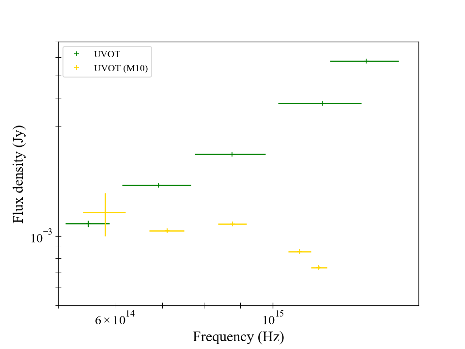
2.2 تحليل التوقيت في الأشعة السينية
لتحليل توقيت الملاحظة 92411-01-06-07 (30 أكتوبر 2006)، استخدمنا بيانات صفيف العد النسبي RXTE (PCA) في تكوين وضع event مع دقة زمنية قدرها 125 s، مما يسمح بالحصول على PDS حتى تردد Nyquist من 4096 Hz. لقد قمنا بحساب متوسط بيانات PDS المتعددة المحسوبة على فترات فرعية من الثواني 128 تغطي مجموعة بيانات إجمالية تبلغ 2048 ثانية، باستخدام تقنيات تحويل فورييه السريع (FFT). لم يتم إجراء أي تصحيحات للوقت الميت أو طرح الخلفية قبل إنشاء PDS. لقد طرحنا قدرة ضوضاء Poisson، المستمدة من PDS في نطاق الترددات 1536 و2048 Hz، بعد Zhang et al. (1995). يوضح الشكل 2 تمثيل التقليدي، حيث قمنا بتطبيق تسوية Leahy (Leahy et al. 1983) قبل تحويل PDS إلى rms الكسري التربيعي. تم تجهيز PDS الناتج بنموذج يتكون من مجموع اثنين من اللورنتزيين، أحدهما واسع النطاق ليناسب ضوضاء التردد المنخفض والآخر ضيق ليناسب QPO في النطاق 500-700 Hz. تم استخدام المعلمات الأكثر ملائمة التي تم العثور عليها كمدخل لـ ISHEM وتم إدراجها في الجدول 1.
| Lorentzian | |||
| Component | |||
| 1 | (0) | ||
| 2 | <250 | ||
| = 1.49(126) | |||
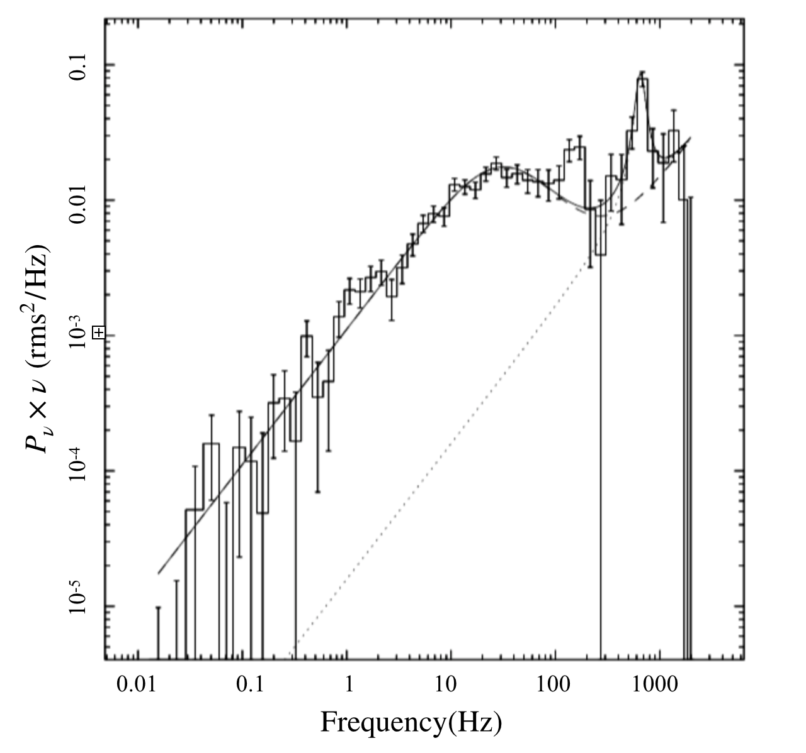
3 نموذج النفاثة
3.1 الشكل الطيفي
يهدف نموذج ISHEM إلى وصف توزيع الطاقة الطيفية للنفاثات بناءً على كيفية تبديد الطاقة على طول الدفق.
كما ذكرنا من قبل، يُعزى انبعاث النفاثات إلى تراكب أطياف السنكروترون ذاتية الامتصاص المنبعثة محليًا من مناطق مختلفة من النفاث، والتي تبلغ ذروتها عند انخفاض الطاقات عندما نبتعد عن قاعدة النفث. ومع ذلك، فإن الطيف النهائي "المسطح" تقريبًا يتطلب أنه في كل منطقة تقريبًا، يتم استعادة الطاقة المفقودة في تمدد النفاث بطريقة أو بأخرى بواسطة الجسيمات. إذا تخيلنا النفث كنتيجة للقذف الدوري لأغلفة المادة المنفصلة وإذا تم قذف هذه الأغلفة بسرعة متغيرة أو بعامل لورنتز ، فإننا نتوقع أن يتم إطلاق جزء من طاقة هذه الأغلفة لكل تصادم بين المقذوفات التي تتحرك بـ مختلفة. ومن ثم يتبين أن الصدمات الداخلية هي آلية قابلة للتطبيق لتجديد الطاقة المفقودة وبالتالي تسطيح الأطياف. ومع ذلك، يجب أن تحدث الصدمات بشكل متجانس في جميع أنحاء المحور النفاث. يتم تحديد نمط التبديد المطلوب في النهاية من خلال عاملين: مدى سرعة توسع التدفق وفقدان الجسيمات للطاقة، والذي يتم تحديده بدوره بواسطة هندسة النفاث (1) وكيف تتقلب سرعة الأصداف المقذوفة مع مرور الوقت (2). في الواقع، فإن التقلب السريع، أي على مدى فترات زمنية قصيرة، ينتج بشكل رئيسي تصادمات قريبة من قاعدة النفث بينما من ناحية أخرى، تميل القذائف الخاضعة للتقلب البطيء إلى إنتاج صدمات على مسافات أعلى.
في ISHEM يتم تنظيم هذين العاملين بواسطة معلمة الهندسة ومدخلات طيف كثافة الطاقة (PDS) (مع تردد ) لعامل لورنتز التقلبات. العنصر الثالث المهم هو ، الذي يحدد ميل الطيف عند الطاقات العالية، في الجزء الرقيق بصريًا من الطيف النفاث. يتم تحديد الشكل النهائي SED من خلال مزيج من هذه المكونات الثلاثة. وفي ما يلي سنقدم المزيد من التفاصيل حول تأثيرات العاملين المذكورين أعلاه.
PDS
: من أجل الحصول على نمط تبديد متجانس، يجب أن يتم توزيع التباين في المقذوفات بشكل متجانس تقريبًا على نطاق واسع من المقاييس الزمنية. على سبيل المثال، في الهندسة المخروطية، يتطلب التعويض الدقيق لفقد الطاقة أن PDS لتقلبات عامل لورنتز النفاث يتوافق مع "ضوضاء وميض"، أي على نطاق واسع من ترددات فورييه (Malzac 2013). تحدث ضوضاء الوميض هذه إذا كان التباين في عامل لورنتز يهيمن عليه ما يسمى "ضوضاء الوميض" (انظر، مثلًا Press 1978)، والذي يحدث في عمليات ذات طبيعة مختلفة، على سبيل المثال. البيولوجية والاقتصادية والفيزيائية، ولكن أيضًا في الفيزياء الفلكية، خاصة في تقلب الأشعة السينية لثنائيات الأشعة السينية (Gilfanov 2010).
ومن المثير للاهتمام، أن فورييه PDS المستخرج من منحنيات ضوء الأشعة السينية لـ BH XRBs في الحالة الطيفية الصلبة، عند الترددات المنخفضة، يشبه إلى حد كبير ضوضاء وميض PDS (انظر Malzac 2014, والمراجع الواردة فيه). علاوة على ذلك، في سيناريو اقتران القرص النفاث، يتم إخراج الأصداف من القرص ومن المعقول توقع أن التقلبات في تدفق التراكم قد تنتقل إلى القاذف. وفقًا لهذه القرائن، يمكن للأشعة السينية PDS أن تكون بمثابة المطلوبة في ISHEM، كما في على سبيل المثال. Drappeau et al. (2015).
الهندسة
: عادةً ما يُفترض أن تكون النفاثات مخروطية، أي أن نصف قطر النفاثة على ارتفاع يتبع علاقة خطية بسيطة.
ومع ذلك، وكلاء داخليين أو خارجيين، على سبيل المثال. قد يؤدي مكون حلقي للمجال المغناطيسي في النفث أو الضغط الذي يمارسه الوسط بين النجمي (انظر القسم 5 لمناقشة عوامل الموازاة) إلى موازاة النفاث وتغيير شكله من المخروطي إلى القطع المكافئ. وبشكل أكثر تحديدًا، يمكننا وصف هندسة النفاثة باستخدام المعلمة مثل: ، حيث للهندسة المخروطية "القياسية"، بينما يشير إلى نفاثة مكافئة (انظر الشكل 3) والأخير من المحتمل أن يكون وصفًا أكثر واقعية من الناحية المادية لبنية النفاثة. تعتبر حالة "النفاثات ذات الضغط الزائد" مع معقولة، ولكنها ستكون بنية غير مستقرة إلى حد كبير وتميل إلى التطور تلقائيًا إلى وضع حيث (Kaiser 2006) 44
4
تم التنبؤ بهذه الظاهرة على مقياس فرسخ فلكي ومقياس kpc نفاثات AGN، حيث يؤدي التمدد الزائد إلى حدوث صدمات معسر وصدمات إعادة موازنة دورية، مما يجبر على أن يصبح أقل من 1 (انظر، مثلًا Perucho and Martí 2007; Godfrey et al. 2012; Fromm et al. 2016, والمراجع الواردة فيه.). في التطبيقات السابقة لـ ISHEM، كان من المفترض أن تكون الهندسة مخروطية الشكل وتم تثبيت على 1 افتراضيًا. هذه هي المرة الأولى التي يتم فيها اختبار تبعية النتائج على . من أجل أخذ الهندسة غير المخروطية في الاعتبار بشكل صحيح، تم تحديث الكود المستخدم في هذا العمل فيما يتعلق بالإصدارات السابقة المستخدمة من قبل، على سبيل المثال، Drappeau et al. (2015); Péault et al. (2019). يتضمن الإصدار الجديد من النموذج أيضًا بعض التحسينات في معالجة نقل الإشعاع، المفصلة في الملحق A. تظهر بعض أمثلة عمليات المحاكاة التي توضح تأثيرات الهندسة غير المخروطية في الشكل 4. كما هو موضح في الشكل، فإن تقليل يسمح بنفاثة أكثر موازية، حيث يتم تقليل فقدان الطاقة ويصبح الطيف أكثر تسطيحًا بشكل طبيعي. علاوة على ذلك، بالنسبة لطول ثابت للنفث، فإن نطاق الأطوال الموجية المنبعثة من المناطق المختلفة سوف يتقلص نتيجة لفقدان الطاقة المحتواة. يؤدي هذا إلى ظهور دوران منخفض التردد يمثل انتقالًا من المنطقة المسطحة الممتصة جزئيًا لـ SED إلى الانبعاث السميك بصريًا عند الترددات المنخفضة. ينشأ هذا الانبعاث السميك بصريًا من الجزء الطرفي للنفث على نطاق أوسع. كما هو موضح في الشكل 4، يتحرك دوران إنهاء التردد المنخفض تدريجيًا نحو الترددات الأعلى عند الأدنى وقد يكون قابلاً للملاحظة إذا كانت النفاثات محصورة بقوة.
يؤدي خفض أيضًا إلى زيادة التدفق الإجمالي المنبعث، حيث تتضاءل كمية الطاقة المفقودة ونطاق التردد الذي يتم توزيع قدرة النفاثة عليه.
يعتمد تردد انقطاع الإنهاء في SED للمصدر أيضًا على حجم النفاثة، والتي تتوافق في نموذجنا مع المسافة التي تمكنت القذائف من الانتشار خلال وقت محاكاة ishem أي cm في الأطياف الموضحة في الشكل. 455
5
لاحظ أنه في العالم الحقيقي، لا يعتمد امتداد النفث فقط على الوقت منذ بدء القذف، ولكن أيضًا على تفاعل النفاثات مع الوسط المحيط بها على نطاقات كبيرة والتي لم يتم تصميمها هنا.
كما هو مبين في الشكل 5، في حالة النفاثات المكافئة بقوة، فإن زيادة وقت المحاكاة تدفع الدوران الطيفي نحو الترددات المنخفضة، دون التأثير على شكل الطيف فوق تردد الدوران (انظر الشكل 6 للتمييز بين تأثير تقليل وزيادة ). في المقابل، في النموذج النفاث المخروطي، يتأثر SED بالكاد بمدة المحاكاة.
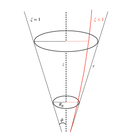
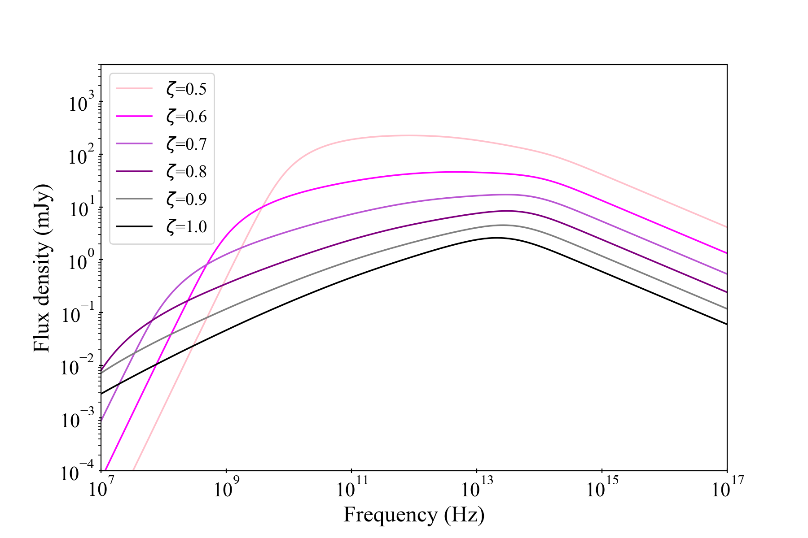
3.2 معلمات ISHEM
يتم أخذ مجموعة واسعة من المعلمات الفيزيائية الأخرى في الاعتبار بواسطة الكود أيضًا، ولكن يمكنها فقط تغيير التردد أو قياس تطبيع SED بالكامل دون تعديل شكله. تصف هذه المعلمات النظام والتدفق وتوزيع الجسيمات المشعة. المعلمات الرئيسية هي: المسافة () إلى المصدر، وميل المحور النفاث بالنسبة إلى خط البصر ()، وكتلة الجسم المضغوط ( في هذه الحالة)، وقدرة النفاثة ()، وزاوية فتح النفاث ()، ونصف القطر عند قاعدة النفاث. النفاثة ()، متوسط عامل لورنتز () للقاذف، عامل ملء الحجم (Malzac 2013)، حدود الطاقة القصوى / الدنيا (، ) لتوزيع الإلكترون. كما هو مذكور في القسم الفرعي 1.1، فإن مسافة المصدر مقيدة جيدًا لتكون حوالي 3.2 kpc (Kuulkers et al. 2010)، بينما لم يتم الإبلاغ عن أي قيود على الإطلاق لمعرفتنا بشأن كتلة NS، والتي سيتم تثبيتها فيما يلي على 1.5 M⊙66
6
وهو قريب من ذروة NSs المعاد تدويرها في التوزيع الشامل NSs المتوقع (Özel et al. 2012)، أو إلى ميل النفاثة ، أو إلى ميل للنظام نفسها. لذلك نقوم مؤقتًا بإصلاح إلى 60∘.
القدرة النفاثةة غير معروفة، لذلك قمنا بتثبيتها لتكون بنفس حجم لمعان الأشعة السينية للمصدر، أي 0.01 (Migliari et al. 2010). سيتم استكشاف تأثيرات و بمزيد من التفاصيل في القسم 5.
لقد اخترنا (Malzac 2014) و يساوي 10 RG، وهو أمر معقول بالنسبة لثنائيات الأشعة السينية، على الرغم من أن تأثير هذه المعلمات على النتائج الإجمالية لا يكاد يذكر. بالنسبة إلى ، والذي من المتوقع أن يتراوح بين 1 و10 (انظر، مثلًا Casella et al. 2010; Saikia et al. 2019)، فقد بدأنا بقيمة 2 (Gallo et al. 2003; Heinz 2004). لقد اعتمدنا قيمة لـ 2∘، حيث من المتوقع أن تكون زوايا الفتح (Miller-Jones et al. 2006) وقد تم استخدام قيمة 2∘ في الماضي77
7
ومع ذلك، لقد تم اقتراح مؤخرًا أن زوايا فتح النفاث في XRBs يمكن أن تكون أصغر من ذلك، أقل من 1∘ (Zdziarski et al. 2016). (انظر، مثلًا Stirling et al. 2001). بالنسبة للحدود الدنيا والعليا لتوزيع الإلكترون، بدأنا ببعض القيم القياسية لثنائيات الأشعة السينية، أي 10 و 106 على التوالي (Gandhi et al. 2011; Malzac 2014; Drappeau et al. 2015). يتم عرض دراسة لكيفية اعتماد SED المحاكاة الناتجة على هذه المعلمات في Péault et al. (2019)، الشكل 2.
كما تمت مناقشته بالفعل في القسم 3.1، في حالة النفاثات غير المخروطية ()، يصبح اختيار أمرًا بالغ الأهمية لأنه يحدد كلاً من حجم النفاثة وموقع الدوران النهائي للنفاثة ذات التردد المنخفض. نختار تعيين هذه المعلمة على s، والذي يتوافق مع الامتداد النفاث النهائي لـ cm. نظرًا لأن الطيف الراديوي المرصود في 4U 0614+091 مسطح إلى حد ما، فإن إعادة إنتاج البيانات باستخدام نموذج غير مخروطي بقوة سيتطلب أن يكون الدوران الطيفي أقل بكثير من 10 GHz. لذلك نريد أن تكون النفاثة كبيرة بقدر ما تسمح به قيود المراقبة. فيما يتعلق بـ 4U 0614+091، فإن القيود المفروضة على امتداد النفاث سيئة للغاية. وهي أن النفاثات من 4U 0614+091 لا ينبغي أن تكون أكبر بكثير من cm، وإلا لكان من الممكن حلها باستخدام VLA. وبشكل عام، تشير عمليات رصد النفاثات المدمجة إلى أبعاد أصغر بكثير لمنطقة البث الراديوي. في حالة النفاثة التي تم حلها لـ Cyg X-1، يشير امتداد النفاثة الراديوية عند 8.4 GHz إلى مقاييس من ترتيب cm (انظر، مثلًا Stirling et al. 2001). وبالتالي فإن اختيارنا لـ هو الأكثر ملاءمة لنماذج النفاثات غير المخروطية بينما لا يزال متوافقًا تقريبًا مع المقياس المتوقع للنفاثة الراديوية.
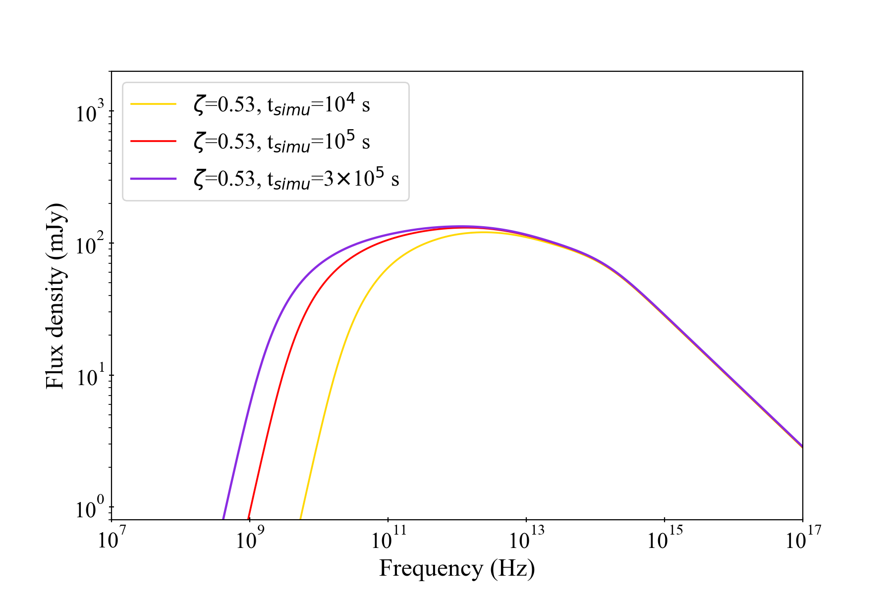
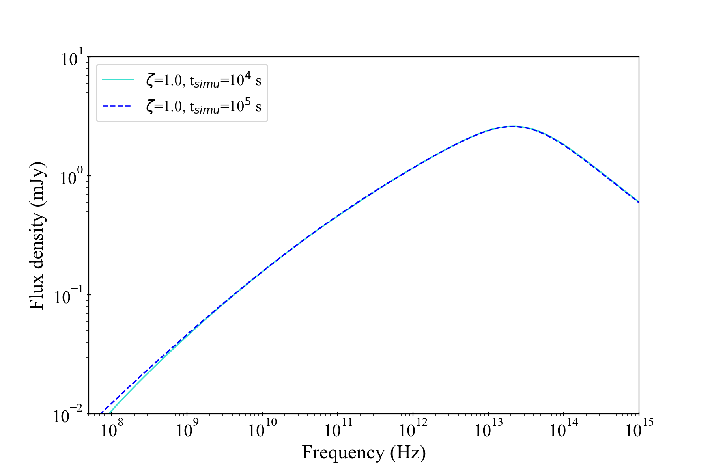
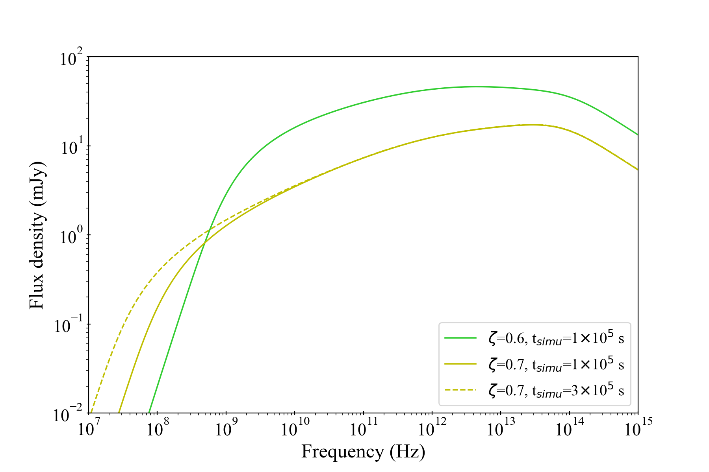
ويرد ملخص للمعلمات المستخدمة في المحاكاة في الجدول 2.
| Simulation parameters | |
|---|---|
| MNS (M⊙) | 1.5 |
| t (s) | 105 |
| r (RG) | 10 |
| (∘) | 2.0 |
| fvol | 0.7 |
| 4/3 | |
| 2.0 | |
| Ejecta scheme | constant shell mass |
| () | 0.01 |
| 10 | |
| 106 | |
| (∘) | 60 |
3.3 المحاكاة
في الأقسام السابقة، قدمنا تفاصيل حول مجموعة البيانات والنموذج. من أجل اختبار مدى توافق البيانات والنموذج، من الضروري أولاً حساب SED اصطناعي باستخدام ISHEM. يحاكي الكود خلال وقت تشغيل محاكاة ثابت إخراج الأصداف ذات السرعة المتغيرة وفقًا للإدخال PDS في بيئة تم إعدادها عن طريق اختيار و والمعلمات الموضحة في القسم الفرعي 3.2. تم إنتاج SED المحاكى لبناء نموذج محلي على Xspec (v. 12.10.1f) يسمى ish المستخدم لملاءمة البيانات. يتميز النموذج بمعلمتين أساسيتين، أي معلمة إعادة التطبيع ومعلمة التحول، والتي تسمح بإعادة قياس أو تغيير تردد SED الاصطناعي ولكن ليس لتغيير شكله، الذي تحدده المعلمات التي تم إعدادها في ISHEM. ولذلك يتم استخدام النموذج ish لملاءمة البيانات. في حالة سوء التوافق، يجب استخدام مجموعة مختلفة من PDS و و من أجل تغيير الشكل الطيفي. عندما يتم العثور على ملاءمة جيدة، يمكن استخدام معلمات القياس والإزاحة الأكثر ملائمة لتحسين مجموعة المعلمات الأصلية في القسم الفرعي 3.2. يتم قياس معلمة التحول مثل كسر التردد ومعلمة إعادة التطبيع مثل التدفق عند هذا التردد . ينطبق نظام العلاقات التالي على هذه المعلمات:
| (1) |
| (2) |
حيث و و. وباستخدام هذه المعادلات، بمجرد حصولنا على قيمتين لمعلمات التحول وإعادة التطبيع، يسمح بالحصول على قيم جديدة للمعلمات التي تظهر في هذه المعادلات، والتي يمكن استخدامها بعد ذلك في ISHEM لمحاكاة SEDs بالمقياس الصحيح وموضع تردد القطع. تمثل المعادلات المبلغ عنها امتدادًا للمعادلات (1) و (2) التي أبلغت عنها Péault et al. (2019) للهندسة غير المخروطية مع أيضًا اعتماد زاوية أكثر واقعية لانبعاث النفاث والذي يعكس أيضًا التحسينات في الإصدار الجديد من ishem المستخدم في العمل الحالي. ويرد الاشتقاق الكامل لعلاقات القياس هذه في الملحق B. أخيرًا، نظرًا لأن الانبعاث الطيفي من المصدر يهيمن عليه إلى حد كبير تدفق التراكم خارج الأطوال الموجية الضوئية، لم نتمكن من تقييد "كسر التبريد" للطيف، والذي يتوقع عند الطاقات العالية (انظر، مثلًا Pe’er 2014). نفترض بعد ذلك أن انبعاث السنكروترون الرقيق بصريًا يمتد بشكل قانون الطاقة على الأقل حتى أصعب نطاقات الأشعة السينية في SED المرصودة. نلاحظ أن استقراء طيف قانون الطاقة IR المرصود عند الطاقات العالية يعني أن النفاثة لها مساهمة ضئيلة في نطاق الأشعة السينية الصلبة (انظر القسم الفرعي 4.3).
4 التحليل الطيفي
في ثنائيات الأشعة السينية منخفضة الكتلة NS، من المتوقع أن يهيمن الانبعاث النفاث فقط على الأطوال الموجية من الراديو إلى IR، بينما يجب أن يُعزى الانبعاث من الأشعة الضوئية إلى الأشعة السينية بشكل أساسي إلى القرص التراكمي (نظرًا لأن الإشعاع المنبعث من الرفيق الخافت لا يكاد يذكر). لذلك، بدأنا بتحليل منفصل لبيانات الراديو إلى IR، المزودة بـ ish. ثم تم وصف بيانات الأشعة السينية بشكل أساسي باستخدام diskir، وهو قرص مشعع بالإضافة إلى نموذج Comptonization (Gierliński et al. 2008). ومع ذلك، على الرغم من أنه من المتوقع أن تهيمن إعادة معالجة الأشعة السينية من القرص الخارجي أو حتى الانبعاث المباشر من القرص الخارجي على منطقة الأشعة تحت الحمراء القريبة (NIR) - المنطقة البصرية في NS LMXBs (Russell et al. 2006, 2007)، إلا أن مستوى معين من المساهمة من انبعاث النفاث قد لا يزال موجودًا (يمكن العثور على أمثلة عدة في، مثلًا Lewis et al. 2010; Harrison et al. 2011; Baglio et al. 2016, 2019). لذلك قمنا بإجراء ملاءمة لمجموعة البيانات بأكملها، من أجل التحقق مما إذا كان التراكم والإخراج يهيمنان على نطاقين تردديين منفصلين أو إذا كانت هناك منطقة حدودية، أي المنطقة الضوئية NIR، حيث لا يمكن تحديد هذه الظواهر بسهولة ويجب أن تؤخذ في الاعتبار معًا.
4.1 من الراديو إلى الأشعة تحت الحمراء: انبعاث النفاثة
لقد حاولنا أولاً إعادة إنتاج SED المرصودة باستخدام مجموعة قياسية من المعلمات، المدرجة في الجدول 2، مع والأشعة السينية PDS واعتماد الهندسة المخروطية المعتادة (=1). لقد اخترنا وفقًا لملاءمتها للجزء الرقيق بصريًا من الطيف النفاث بواسطة Migliari et al. (2010) وأيضًا لنظرية تسارع الصدمات المنتشرة القياسية. قمنا بعد ذلك باختبار الطيف "الاصطناعي" على Xspec، باستخدام نموذج ish المبني عليه ليناسب البيانات. لقد تحققنا أيضًا مما إذا كان استخدام نموذج لورنتزي واحد بدلاً من نموذج لورنتز المزدوج، أي تجاهل مكون التردد العالي QPO (انظر القسم الفرعي 2.2) والذي من المحتمل أن يكون مرتبطًا بالحركة المدارية للنظام (Stella and Vietri 1998)، يمكن أن يؤثر على نتائج الملاءمة. لقد وجدنا أن كلا النموذجين يؤديان إلى نفس النتائج، لذلك سنشير فيما يلي فقط إلى النتائج التي تم الحصول عليها بما في ذلك QPO.
وحتى لو كان من المتوقع أن تتأثر تدفقات IR بشكل طفيف فقط بالاحمرار بين النجوم، فقد قمنا بتضمين النموذج redden، الذي يقدر الانقراض في النطاق البصري، . تم تجميد الأخير إلى 0.5 (انظر القسم 4.2)، حيث تم تركه غير مقيد بالملاءمة. نتيجة الملاءمة سيئة للغاية، كما يشهد على ذلك (d.o.f.) الناتج عن 3.96 (5).
علاوة على ذلك، باستخدام المعادلات 1-2 لاستكشاف المعلمات اللازمة لتحسين المحاكاة، وجدنا أنه من أجل الحصول على قيم معقولة للقدرة النفاثةة بالترتيب المتوقع من حيث الحجم، أي 0.01 ، يتعين على المرء استدعاء زوايا فتح عالية بشكل غريب (انظر القسم 5). كما هو مذكور في القسم 3، يمكن أن يتأثر شكل SED بثلاثة عناصر فقط: شكل توزيع الإلكترون (الذي يعدل ميل الجزء الرقيق بصريًا من الطيف)، والهندسة المختارة ونمط تبديد المقذوفات، في هذه الحالة بناءً على الأشعة السينية PDS. نظرًا لأن بيانات IR تم تركيبها جيدًا بواسطة المنطقة الرقيقة بصريًا من SED الاصطناعية، فإن القيمة المختارة لـ تبدو صحيحة، كما هو متوقع. فيما يلي سنحاول بعد ذلك تغيير الشكل الهندسي أولاً ثم PDS لمعرفة ما إذا كان لا يزال بإمكاننا العثور على نموذج جيد للبيانات، مع اختيار مختلف لهذه المكونات.
من أجل التحقق مما إذا كانت قيمة مختلفة لـ قد تؤدي إلى تحسين نتائج الملاءمة، قمنا مرة أخرى بإجراء عمليات المحاكاة باستخدام مختلفة بين 0.5 و1.0، وقمنا بتكرار الإجراء بأكمله.
يتم عرض أفضل الملاءمات الناتجة كدالة لـ في الشكل 7، (a)-(b).
يتم عرض نتائج كل توافق في الجدول 3. قيم التي لدينا أدنى لها هي 0.57 و0.6 (1.08 و1.13 على التوالي، وكلاهما مع 5 d.o.f.). تمثل النفاثة المكافئة ذات في هذا النطاق من القيم سيناريو مناسبًا مقبولًا، على عكس الهندسة المخروطية النموذجية.
كما هو مذكور في القسم الفرعي 3.2، بالنسبة للأشكال الهندسية غير المخروطية بقوة، يتم الحصول على الأطياف بأوقات محاكاة أطوليمكن أن تنتج أطيافًا مسطحة. نعرض في الجدول 4 نتائج الملاءمة لثلاث قيم ، أي 0.53 و0.60 و0.7، مع و. كما هو متوقع، يتم تخفيض قيم بشكل عام عن طريق زيادة وقت المحاكاة، باستثناء التوافق مع ، والذي لا يتأثر في الغالب بتغيير . لذلك اكتشفنا أنه حتى مع أوقات المحاكاة الأعلى، يتم الحصول على أفضل ملاءمة مرة أخرى لـ حول 0.6. في حين أن وقت المحاكاة الأعلى سيظل مقبولًا ماديًا (انظر القسم الفرعي 3.1)، فمن المحتمل جدًا أن يؤكد فقط النتائج المقدمة هنا باستخدام الأقصر والأكثر جدوى.
نلاحظ أيضًا أن استنتاجنا بشأن أفضل قيمة لـ لا ينبغي اعتباره نهائيًا، حيث أن إجراء المزيد من التحقيقات في النطاق بين 0.53 و0.6، مع احتمال وجود أعلى، يمكن أن يؤدي، من حيث المبدأ، إلى تقديرات أكثر دقة للأفضل. . ومع ذلك، فإن التقدير الدقيق لـ يتجاوز نطاقات هذا العمل ومن المرجح أن لا يقدم أي تحسن أو يقدم القليل جدًا من التحسن في النتائج.
لذلك نستنتج أن الهندسة غير المخروطية، مع حول 0.6 وربما حتى أقل من ذلك، تحسن بشكل كبير التوافق مع ISHEM باستخدام الأشعة السينية PDS.
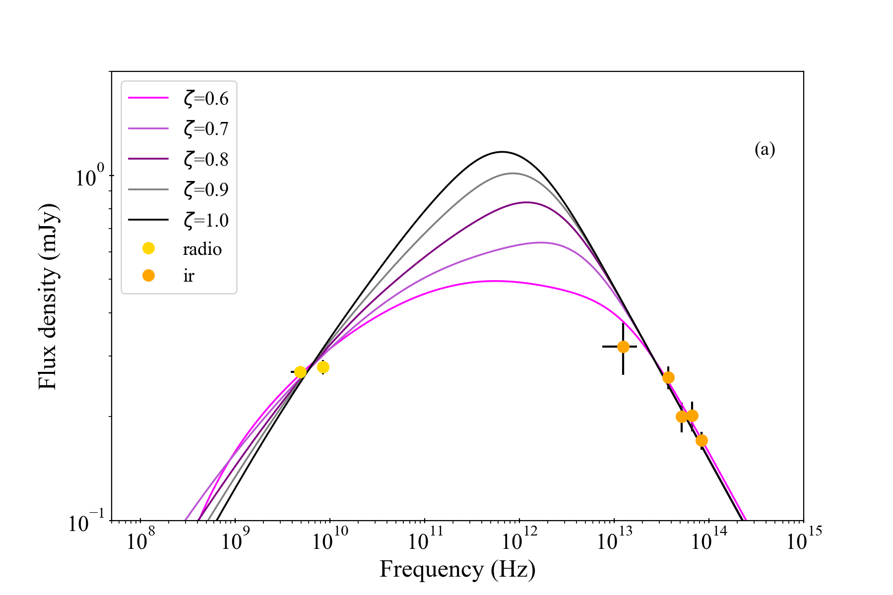
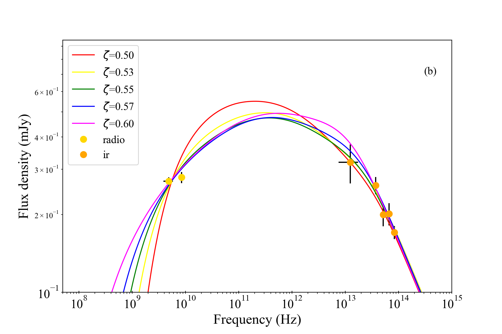
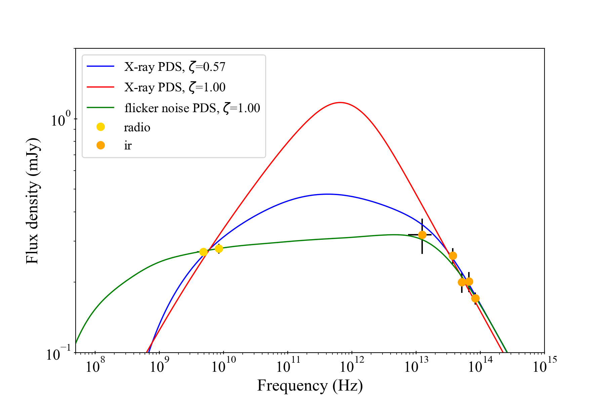
| Fit results for different jet geometries | |||||||||
|---|---|---|---|---|---|---|---|---|---|
| 0.50 | 0.53 | 0.55 | 0.57 | 0.60 | 0.70 | 0.80 | 0.90 | 1.00 | |
| 5.95 | 2.34 | 1.46 | 1.08 | 1.13 | 2.11 | 2.84 | 3.37 | 3.96 | |
| Fit results for different jet geometries and simulation times | ||||||
| 0.50 | 0.60 | 0.70 | ||||
| ( s) | 1 | 3 | 1 | 3 | 1 | 3 |
| 2.34 | 1.36 | 1.13 | 0.80 | 2.11 | 2.13 | |
قمنا بعد ذلك باختبار السيناريو الآخر المحتمل، حيث لا يعكس تقلب الأشعة السينية المرصودة تقلبات سرعة القذف، وذلك باستخدام "ضوضاء الوميض" PDS في الهندسة المخروطية. لقد افترضنا سعة كسرية rms تبلغ 30% وقمنا بتضمين مجموعة من الترددات تتراوح من Hz إلى Hz. باستخدام نفس مجموعة المعلمات الموضحة في الجدول 2، حصلنا على SED الاصطناعي والذي يتوافق جيدًا مع البيانات، أي (d.o.f.)=0.27(5). يظهر النموذج الأفضل ملاءمة في الشكل 8، مقارنةً بالبيانات وزوج من النماذج الأكثر ملائمة التي تم الحصول عليها باستخدام الأشعة السينية PDS والقيم المتغيرة لـ .
4.2 من البصري إلى الأشعة السينية: انبعاث القرص
بينما ركزنا في القسم السابق على الجزء من SED الذي يهيمن عليه النفاث، سنركز في هذا القسم على بيانات الأشعة الضوئية إلى الأشعة السينية، والتي من المتوقع أن يهيمن عليها القرص وانبعاث الإكليل الساخن.
بادئ ذي بدء، استخدمنا diskir (Gierliński et al. 2008)، والذي يتضمن انبعاث القرص والتركيب من الهالة الساخنة وإضاءة القرص بالأشعة السينية، ذات الصلة بوجود تغطية البيانات في المجال البصري UV (كما في حالتنا). المعلمات الرئيسية للنموذج هي: درجة حرارة القرص في نصف قطرها الداخلي ، مؤشر لقانون الطاقة الذي يعيد إنتاج طيف Comptonization، درجة حرارة الإلكترون للإكليل ، النسبة بين لمعان الانبعاث Comptonized ولمعان القرص، جزء التدفق من ذيل كومبتون الذي تم تسخينه في نصف القطر الداخلي والخارجي ( و على التوالي)، ونصف قطر القرص المضيء ، ونصف قطر القرص الخارجي (كلاهما في وحدات نصف قطر القرص الداخلي) والتطبيع ، والذي يمكن استخدامه لاشتقاق نصف قطر القرص الداخلي.
تُستخدم القيمة عمومًا كمؤشر للحالة الطيفية وعادةً ما تكون أعلى من 1 في الحالات المتوسطة/الصعبة. في الملاءمات التالية، قمنا بتثبيت و على القيم القياسية لـ 0.1 و1.1 على التوالي (Gierliński et al. 2008). علاوة على ذلك، بما أن 4U 0614+091 معروف بأنه ثنائي فائق الصغر، فقد قمنا بتثبيت على قيمة 3. تعتبر هذه القيمة معقولة بالنظر إلى أنه نظرًا لأن النظام لديه فترة مدارية تبلغ حوالي 50 دقيقة، فمن المتوقع أن يكون الفصل المداري حوالي 3 km وعامل 103 يضمن أنه حتى مع وجود نصف قطر داخلي كبير للقرص، على سبيل المثال 100 RG، كما هو متوقع في الحالة الصلبة، فهو أكبر من امتداد القرص. قمنا أيضًا بتضمين نموذج الجسم الأسود في الطيف (bbody في Xspec)، الموجود بالفعل في الملاءمة بواسطة Migliari et al. (2010)، والذي يمثل انبعاث سطح NS (أو الطبقة الحدودية). أخيرًا، قمنا بتضمين المكونين الغوسيين اللذين استخدمهما هؤلاء المؤلفون، أي في 0.67 keV لخط O VIII وفي 6.6 keV لخط الفلورسنت Fe K. لقد طبقنا على النموذج المكونين redden وtbabs لمراعاة الانقراض بين النجوم في كل من نطاق UV والأشعة السينية. أخيرًا، قمنا بتضمين constant ليكون بمثابة ثابت معايرة متقاطعة وتأكدنا من أن قيمته كانت دائمًا حول 1، أي في النطاق 0.8-1.2.
لم يقيد الملاءمة ، وبالتالي تم تثبيته مؤقتًا على 10، وهي قيمة معقولة للحالات الصلبة (انظر، مثلًا Del Santo et al. 2008). الملاءمة غير قادرة على تقييد معلمات مكون gaussian عند 6.6 keV، نظرًا لمساهمة هامشية لهذا المكون في الملاءمة، أي احتمالية التحسين 9% بالصدفة (يتم حسابها عبر ftest). وهذا ليس مفاجئًا، لأن هذه ليست المرة الأولى التي يتم فيها العثور على خط الحديد في 4U 0614+091 ضعيف جدًا (انظر، مثلًا Piraino et al. 1999). في ما يلي، لن نقوم بتضمين مكون gaussian. من ناحية أخرى، أكدنا وجود خط عريض في 0.67 keV، ومن المحتمل أن يكون مرتبطًا بـ O VIII (انظر القسم 1.1 للحصول على مراجع). توفر الملاءمة E(B-V) (من redden) لحوالي 0.5، والتي تتوافق مع قيمة 88
8
مع الأخذ في الاعتبار العلاقة ، مع تثبيت على 3.1 (Seaton 1979b, a); من AV أقل قليلاً من تلك المذكورة في Migliari et al. (2010)، أي ما يعادل 2. لقد تمكنا من العثور فقط على حد أدنى مرتفع نسبيًا لدرجة حرارة الإكليل، أي 110 keV، والذي قد يكون بسبب عدم وجود نمذجة مناسبة للذيل الصلب عالي الطاقة (انظر، مثلًا Di Salvo et al. 2001; Iaria et al. 2001; D’Aí et al. 2007; Del Santo et al. 2013, والمراجع الواردة فيه) بدلاً من بلازما الإلكترون ذات درجة الحرارة العالية. أدت نتائج الملاءمة أيضًا إلى قرص أكثر برودة بشكل ملحوظ فيما يتعلق بـ Migliari et al. (2010)، أي keV، لكن الارتباطات مع تطبيع القرص و/أو مع القيم المفروضة لـ قد تكون مؤثرة. ترتبط تسوية القرص بنصف القطر الداخلي للقرص بواسطة العلاقة: ، حيث هي مسافة النظام بوحدات 10 kpc. لقد وجدنا نصف قطر داخلي واضح للقرص 160 km ( 73 RG)، والذي يجب اعتباره حدًا أدنى لأنه لا يأخذ في الاعتبار الميل الصحيح (غير المعروف) للنظام وعامل التصحيح (لحساب أكثر تفصيلًا لنصف قطر القرص الداخلي استنادًا إلى انظر، مثلًا Marino et al. 2019, والمراجع الواردة فيه). من المحتمل أن تكون الاختلافات القليلة في نتائجنا فيما يتعلق بالنتائج التي حصل عليها Migliari et al. (2010) على نفس بيانات الأشعة السينية ناتجة إما عن إدراج مجموعة البيانات الخاصة بنا في مجموعة البيانات الخاصة بنا.
بيانات SMARTS-UVOT أو للنماذج المختلفة المستخدمة في الورقتين.
| Spectral analysis | |||
|---|---|---|---|
| redden | E(B-V) | 0.48 | |
| tbabs | NH | 1022 cm-2 | 0.210.02 |
| diskir | keV | 0.0770.003 | |
| keV | >110 | ||
| 2.240.02 | |||
| (10) | |||
| (0.10) | |||
| (10-3) | 2.0 | ||
| () | 73 | ||
| (1.01) | |||
| (103) | |||
| gaussian | (keV) | 0.6710.009 | |
| (keV) | 0.0770.006 | ||
| bbody | (keV) | 1.380.02 | |
| = 1.49(442) | |||
4.3 تحليل شامل متعدد الأطوال الموجية
سمحت لنا التحليلات الطيفية التي أجريت في الأقسام الفرعية 4.1-4.2 بتوصيف الانبعاث من النفاثات ومن القرص بشكل منفصل، في ظل فرضية أن مجالاتها الطيفية كانت مستقلة. نورد فيما يلي تقريرًا عن مجموعة البيانات العالمية المزودة بنماذج التراكم والطرد، من أجل تأكيد الافتراض السابق وتقديم دراسة نهائية متعددة الأطوال الموجية لتوزيع الطاقة الطيفية لـ 4U 0614+091.
بدءًا من النموذج الأكثر ملائمة لبيانات الأشعة الضوئية إلى الأشعة السينية، والتي تم الإبلاغ عن معلماتها الرئيسية في الجدول 5، قمنا بتضمين بيانات VLA وSpitzer المستخدمة في القسم الفرعي 4.1 وأضفنا ish للنموذج الطيفي المستخدم. نظرًا لأنه ليس من الممكن استبعاد مسبقًا أن نتائجنا على النفاثة ربما كانت متحيزة بسبب عدم وجود بيانات الترددات الأعلى، فقد أجرينا العديد من الملاءمات لتجربة نماذج ISHEM المختلفة مع الممتدة من 1.0 إلى 0.5. لسوء الحظ، يؤدي كل توافق إلى نفس قيمة (d.o.f.) تقريبًا لـ 1.49(451). وبالمثل، باستخدام نموذج ISHEM المستند إلى "ضوضاء الوميض" PDS، ينتج عن الملاءمة قيمة (d.o.f.) لـ 1.43(451).
هذا الموقف ليس مفاجئًا لأن الملاءمة تهيمن عليها بالفعل البيانات الإحصائية الأعلى في الأشعة السينية ولا تتأثر إلا قليلاً بنمذجة نقاط البيانات القليلة في مجال الراديو IR. ترك نفس النموذج، أي بما في ذلك diskir وbbody، ولكن إهمال جميع البيانات باستثناء الراديو وIR، يؤدي إلى نوبات مشابهة للنوبات التي تم إجراؤها في القسم الفرعي 4.1: من بين التناسبات المختلفة مع الأشعة السينية PDS مع اختلافات ، يتم الحصول على أفضل توافق مرة أخرى باستخدام ، أي الذي ينتقل التوافق فيه من d.o.f.=671.9/451 (بما في ذلك بيانات الأشعة السينية) إلى d.o.f.=5.25/5.، أثناء اختيار ضجيج الوميض PDS ينتقل الملاءمة من /d.o.f.=644.9/451 إلى /d.o.f. من 3.55/5. ومع ذلك، فإن تمديد مجموعة البيانات له بعض التأثيرات على معلمات ISHEM الأكثر ملاءمة، أي تردد التحول وعوامل إعادة التطبيع، والتي تختلف فيما يتعلق بالمجموعة السابقة من الملاءمات. في القسم التالي، نستخدم المعادلات 1-2 للتحقق مما إذا كانت أفضل التحولات والتطبيع تسمح بالمعلمات الفيزيائية "المعقولة" للنفاثة.
أخيرًا، قمنا بالتحقق مما إذا كانت النتائج تعتمد على القيم التي يفترضها ثابت المعايرة المتقاطعة لبيانات IR والبيانات الراديوية، والتي يُفترض أنها تساوي 1.0 للراديو وبيانات IR؛ إن ترك معلمات المعايرة المتقاطعة حرة للتنوع بين 0.8 و1.2 لا يغير بشكل كبير القيم التي تم الحصول عليها لـ (d.o.f.). في ما يلي سوف نشير فقط إلى الملاءمات مع المعلمات المثبتة على 1.0.
نشير إلى الشكل 9 لـ SED، الذي تم فرضه بشكل زائد على نموذج ISHEM الأفضل ملاءمة. إن المعلمات الأكثر ملائمة لنموذج تدفق التراكم الموجودة مع امتداد الترددات المنخفضة لمجموعة البيانات كلها متوافقة تمامًا مع النتائج المذكورة في الجدول 5.
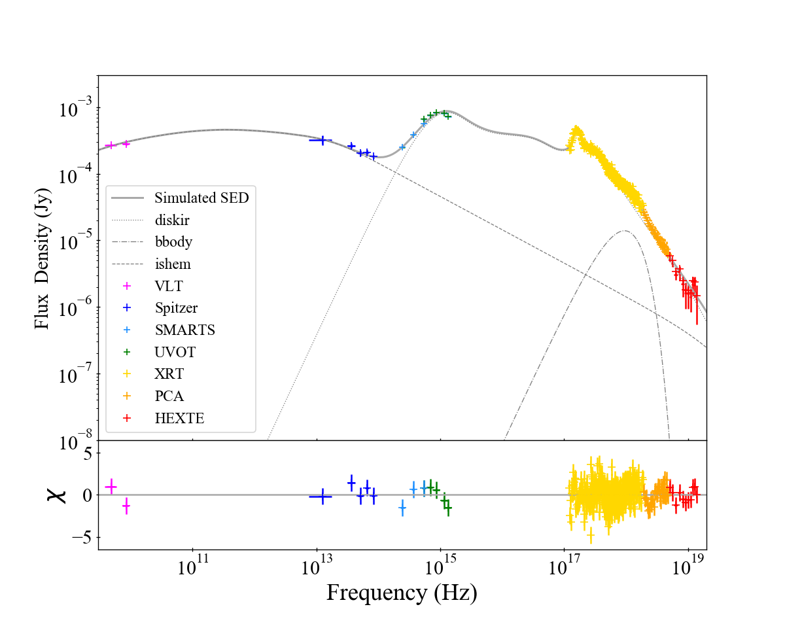
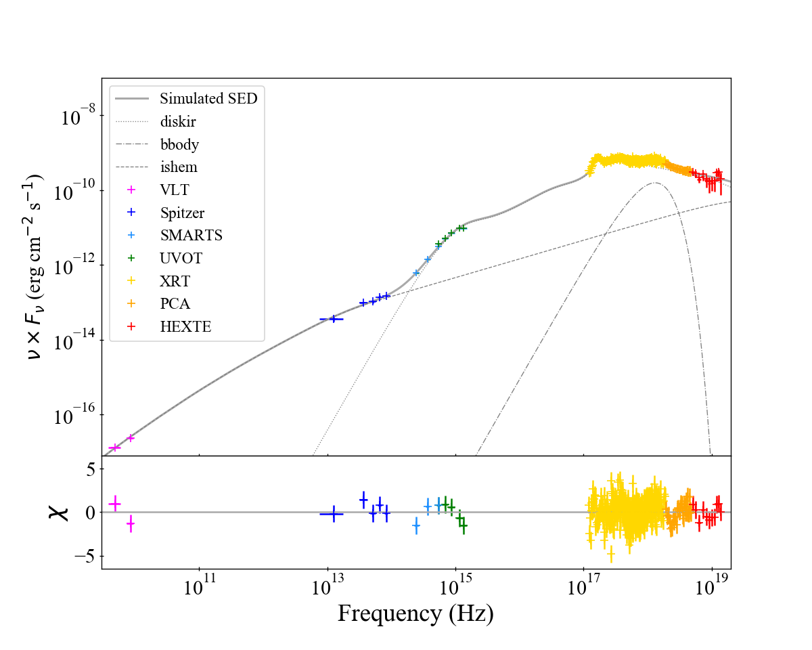
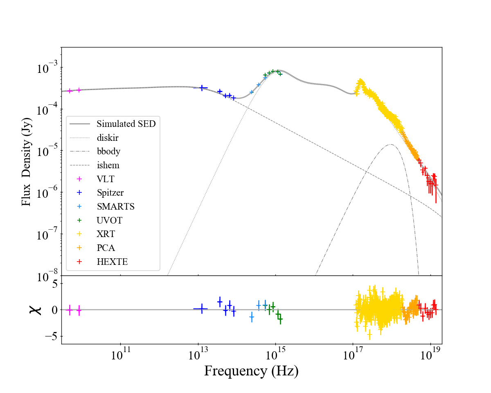
5 مناقشة
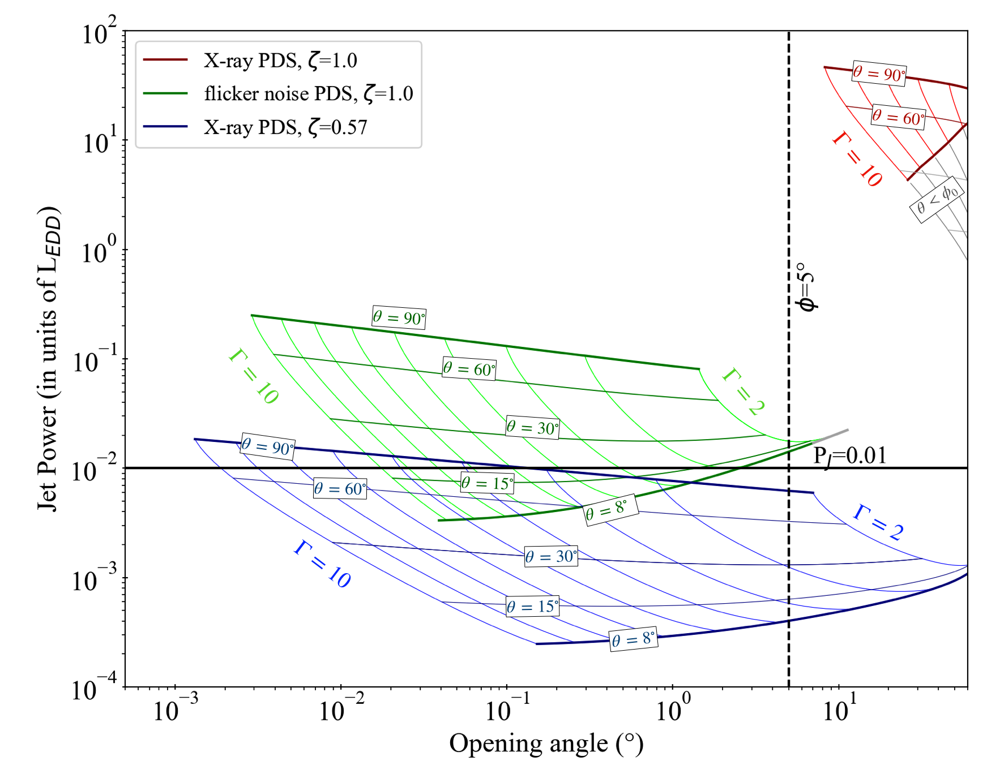
. في هذا المخطط، يشير الخط الأسود المتصل إلى قدرة النفاثة المتوقعة، بينما يشير الخط الأسود المتقطع إلى الحد الأعلى لزاوية الفتح.
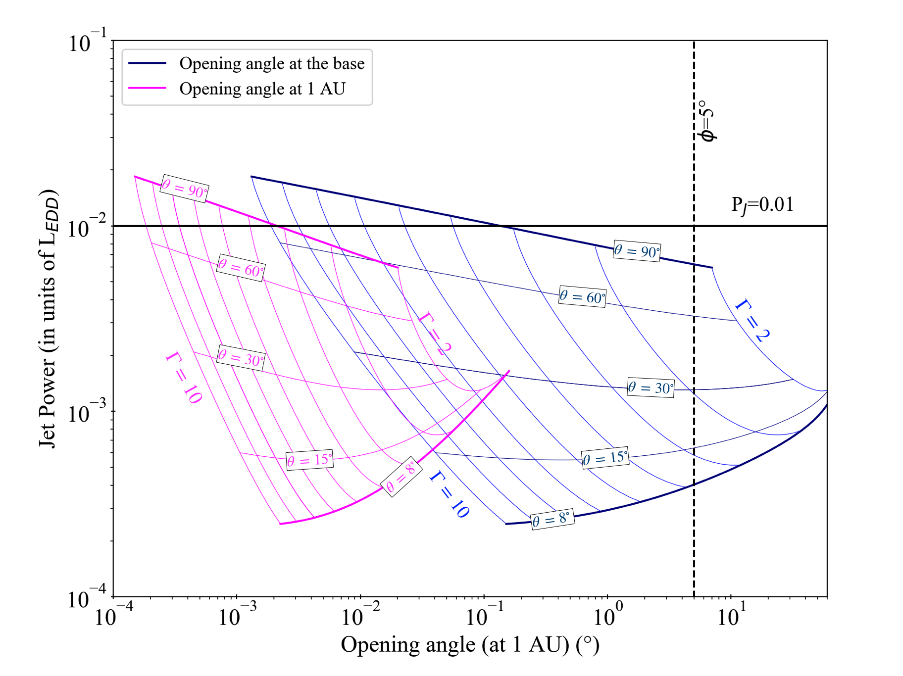
يقترح التحليل المقتصر على مجال راديو IR الذي تم إجراؤه في القسم الفرعي 4.1 سيناريوهين محتملين لوصف انبعاث النفاث لـ 4U 0614+091 ضمن سيناريو الصدمات الداخلية: من ناحية، يرتبط التباين في عوامل لورنتز للقذف بتقلب الأشعة السينية، أي التباين في تدفق التراكم، ولكن النفث هو غير مخروطي (في السيناريو التالي a)، من ناحية أخرى، من الممكن أيضًا، على الأقل في هذا المصدر، أن يكون طيف قدرة ضوضاء الوميض، غير المرتبط بتقلب الأشعة السينية، وكيلًا أفضل لتقلبات عامل لورنتز النفاث (السيناريو b). تبين أن تضمين جزء الأشعة الضوئية إلى الأشعة السينية من مجموعة البيانات في القسم الفرعي 4.3 لم يكن حاسمًا في التمييز بين السيناريوهين المقترحين. ويرجع ذلك في الغالب إلى نقص البيانات حول 1011-1012 erg s-1. مدى توفر البيانات في هذه المنطقة، على سبيل المثال. من Atacama Large Millimeter/submillimeter Array (ALMA)، كان من الضروري التمييز بين السيناريوهين. على سبيل المثال، تشير بيانات ALMA الخاصة بـ NS LMXBs الأخرى في الحالة الصلبة (انظر، مثلًا، توزيعات SED المعروضة بواسطة Díaz Trigo et al. 2017, 2018) إلى ارتفاع طفيف في كثافة التدفق في هذه المنطقة، والذي، إذا تمت ملاحظته أيضًا في مجموعة البيانات الخاصة بنا، فمن المحتمل أن يفضل السيناريو a.
سنقوم بدلاً من ذلك باستكشاف ومناقشة كلا السيناريوهين a وb في القسم التالي، على أساس الملاءمة الشاملة المذكورة في القسم الفرعي 4.3. في كلتا الحالتين هناك دليل على أنه ليس من الممكن فصل مساهمة القرص في مجال IR تمامًا أو مساهمة النفاث في المجال البصري أيضًا. على وجه الخصوص، ينتج عن ذلك أن هناك مساهمة نفاثة تتراوح من 30% إلى 6% في نطاق الأطوال الموجية SMARTS ضمن السيناريو a، بينما تكون هذه المساهمة أقل بروزًا في السيناريو b، أي من 20% إلى 3%. تؤكد هذه النتائج الدراسة التي قادها Russell et al. (2006) والتي بموجبها في NS LMXBs فإن عملية الانبعاث الرئيسية التي يجب مراعاتها في المجال البصري هي إعادة معالجة الأشعة السينية من القرص99
9
على عكس الثقوب السوداء، حيث يمتد الانبعاث النفاث عادة حتى الأطوال الموجية الضوئية (انظر، مثلًا Péault et al. 2019)، على الرغم من أنهم يشيرون أيضًا إلى أن مساهمة النفاثة قد لا تكون ضئيلة على الإطلاق.
5.1 السيناريو a: نفاثة غير مخروطية؟
نظرًا للإحصائيات العالية في الأشعة السينية، فإن الملاءمة لمجموعة البيانات بأكملها تعطي قيم قابلة للمقارنة لكل من الأشكال الهندسية التي تم اختبارها. من أجل تحديد القيم الأكثر احتمالاً لـ ، نستخدم المعادلة 1-2 لتحويل قيم عوامل التحول وإعادة التنظيم التي وجدتها ish في أزواج -. واستكشفنا أيضًا كيف تأثرت هذه النتائج باختيارنا لـ و، مما يسمح لكليهما بالتغيير في بعض النطاقات المعقولة ماديًا. على وجه الخصوص، منذ علاقات القياس المستخدمة في هذا العمل، أي مكافئ. 1-2، صالحة لتقريب (انظر B.2)، مع زاوية الفتح عند قاعدة منطقة الانبعاث، قمنا بتثبيت الحد الأدنى للميل إلى 8∘. من ناحية أخرى، تم السماح لـ بالتنوع في نطاق 2-10. يؤدي تشغيل هذه الاختبارات إلى رسم مناطق النتائج المحتملة في مخطط -، المتوافق مع قيم محددة لـ .
نعرض في الشكل 10 المساحة الناتجة لـ (الأحمر) و (الأزرق).
في كل منطقة من المناطق المنحرفة الناتجة، يتوافق الجزء السفلي من المناطق مع ، ويتوافق الجزء العلوي مع ، بينما يزيد من اليمين (حيث ) إلى اليسار (). المناطق الفرعية حيث تكون الحالة ملونة باللون الرمادي ويجب استبعادها. من المهم ملاحظة أنه بالنسبة للهندسة غير المخروطية، تعتمد زاوية الفتح على المسافة على طول التدفق. وبالتالي فإن منطقة الإرسال، التي تقع عند حوالي 1 AU من قاعدة النفث، سيكون لها زاوية فتح مختلفة عن القيم التي تشملها المنطقة الزرقاء في الشكل 10. وبالتالي فإن هذه الزاوية يمكن أن تنتهك الشرط . في الواقع، بالنسبة لمعلمة الهندسة الثابتة ، يؤدي استخدام زاوية الفتح على مسافة 1 AU إلى زوايا أصغر بكثير، أي أقل من 0.1∘، كما هو موضح في الشكل 11. مثل هذه القيم القصوى ليست غير محتملة، حيث تم اقتراح زوايا فتح صغيرة للنفاثات في XRBs (انظر، مثلًا Zdziarski et al. 2016). يمكن قبول كل من نطاقات القوى النفاثة وزوايا الفتح التي تميزها مناطق ويبدو أن قيمة 0.6 لا تزال متسقة مع أفضل سيناريو ذو دوافع مادية.
بالنسبة لـ ، على العكس من ذلك، فإن المنطقة التي تم العثور عليها بواسطة هذا الإجراء لا تسمح بزوايا فتح صغيرة بشكل معقول وتتطلب قوى نفاثة عالية جدًا للمجموعة الكاملة من المستكشفة. وهذا يمثل نقطة أخرى لصالح استبعاد سيناريو الهندسة المخروطية.
إن مفهوم النفاثة غير المخروطية ليس مفهوما جديدا: فمن المعروف أن الهندسة المخروطية هي تقريب للهندسة الحقيقية، كما ثبت أنها صالحة وفعالة. يمكن أن يكون عامل الحبس الضروري داخليًا أو خارجيًا. في الحالة الأولى، اقترح العديد من المؤلفين أن الموازاة قد تكون بسبب مكون حلقي للمجال المغناطيسي الذي يزداد على طول المحور ويجبر النفاث على تقليل زاوية فتحه (انظر، مثلًا Heyvaerts and Norman 1989; Pudritz et al. 2006, 2012). ومع ذلك، فقد تم التشكيك في هذه الآلية بواسطة Spruit (2010)، والتي بموجبها يكون الحبس الذاتي المغناطيسي للنفث غير ممكن فيزيائيًا لأن الضغط المغناطيسي الحلقي داخل النفث سيجبرها على التوسع. من ناحية أخرى، فإن الموازاة اللازمة "لكسر" الهندسة المخروطية (غير المستقرة، Martí et al. 2016) قد يتم تنفيذها على سبيل المثال بواسطة الوسط البينجمي (مثلًا Asada and Nakamura 2012) أو مجال مغناطيسي خارجي محفوظ في مكانه بواسطة القرص (مثلًا Spruit et al. 1997).
ومن المثير للاهتمام مقارنة هذه النتائج مع تلك التي تم العثور عليها سابقًا من خلال تطبيق نفس نموذج ISHEM على النفاثات في BH-XRBs، حيث عمل افتراض الهندسة المخروطية بشكل صحيح. في حالات قليلة (انظر مثلًا بواقي الراديو لبعض الأطياف في Péault et al. 2019, ، الشكل 3) من المعقول أن النماذج المسطحة يمكن أن تحسن الملاءمة المقبولة بالفعل وبهذا المعنى قد تكون الهندسة غير المخروطية ضرورية. وبالتالي فإن أي مقارنة بين NS وBH XRBs سابقة لأوانها لسببين على الأقل: لم يتم اختبار الهندسة غير المخروطية لـ BH XRBs وأيضًا، نحتاج إلى اختبار المزيد من NS LMXBs لاستخلاص أي استنتاج بشأن الفرق المحتمل بين النفاثات في هاتين الفئتين من الأنظمة.
5.2 السيناريو b: تقلب الأشعة السينية ليس وكيلًا جيدًا لتقلبات عامل لورنتز
في السيناريو الثاني، لا يرتبط نمط تبديد الطاقة الداخلية للقذائف في النفث بخصائص توقيت الأشعة السينية، أي خصائص توقيت التدفق التراكمي، ولكنه يرجع بشكل أساسي إلى "ضوضاء الوميض". يتم تأكيد معقولية هذا السيناريو من خلال الرسم التخطيطي - في الشكل 10، نظرًا لأن المنطقة المقابلة تشمل النطاق المتوقع لزاوية فتح القوى النفاثة.
هذا ليس رائدًا أيضًا (نحيل مرة أخرى إلى، مثلًا، Jamil et al. 2010; Malzac 2013) ولكنه سيكون بالتأكيد مختلفًا عن النتائج التي تم الحصول عليها من المصادر الأخرى التي تم تطبيق نموذج ISHEM عليها في الماضي. في هذه الحالة، قد تلعب حقيقة وجود NS بدلاً من BH دورًا. في ظل فرضية اقتران القرص النفاث، قد لا يتم نقل التباين في الانبعاث من الطبقة NS/الحدودية إلى القاذف في النفاث، مما يؤدي لاحقًا إلى قطع الاتصال بين نمط القذف للأصداف والأشعة السينية PDS. وبدلاً من ذلك، يمكن للمرء أيضًا أن يأخذ في الاعتبار الاختلافات في آلية إطلاق النفاثات في NSs فيما يتعلق بـ BHs. على سبيل المثال، يُظهر Parfrey et al. (2016) كيف أن التفاعل بين NS والمغنطيس المنخفض الذي يدور بسرعة والقرص قد يؤدي إلى حالة تكون فيها خطوط المجال المغناطيسي مفتوحة وتوفر الطاقة اللازمة لطرد الجسيمات. في هذه الحالة، لا نتوقع أن يكون نمط التبديد في القذف وتقلبات تدفق التراكم في القرص متطابقين تمامًا. يمكن أن تكون مثل هذه الآلية فعالة في تراكم النجوم النابضة للأشعة السينية بالميلي ثانية والأنظمة المماثلة، والتي قد تتضمن 4U 0614+091. في الواقع، النظام، مع دوران التردد 415 Hz (انظر، مثلًا van Doesburgh and van der Klis 2017, والمراجع الواردة فيه)، ينتمي إلى عائلة الثنائيات التي تستضيف NSs بالمللي ثانية. ومع ذلك، فمن المحتمل أن يكون المجال المغناطيسي NS مدفونًا، كما يشهد على ذلك عدم وجود نبضات الأشعة السينية المرصودة، وهذا من شأنه أن يجعل نسبة الآلية المذكورة إلى النظام غير محتملة.
نقترح أيضًا أن عدم وجود ارتباط بين تقلب الأشعة السينية والقذف في النفاثة المقترحة هنا لـ 4U 0614+091 قد لا يكون بالضرورة ممثلًا لفئة NS LMXBs بأكملها في الحالة الصلبة. كما هو واضح من بيانات VLA المستخدمة في هذا البحث، يبدو الطيف النفاث مسطحًا تمامًا، والذي، كما نتذكر من القسم الفرعي 3.1، يتطلب أيضًا PDS مسطحًا تقريبًا. من الواضح أن الأشعة السينية المستخدمة PDS ليست بالشكل المطلوب، وبالتالي ليس من المستغرب أنها قد لا تكون أفضل تتبع للتغير في سرعة القذائف. وقد لوحظت PDS مماثلة بشكل متكرر في ما يسمى بالجزيرة المرجانية LMXBs، عندما تكون في الدولة الجزيرة (IS) (انظر، مثلًا van Straaten et al. 2002, 2003). من ناحية أخرى، تم العثور على PDS الذي تهيمن عليه ضوضاء واسعة ومسطحة، على غرار ما لوحظ في BH XRBs في الحالة الصلبة، أيضًا في العديد من مصادر الجزر المرجانية ذات اللمعان المنخفض (Belloni et al. 2002; Reig et al. 2004; van Straaten et al. 2005). تم تصنيف سلوك التباين هذا على أنه حالة الجزيرة المتطرفة (EIS) (Méndez and van der Klis 1997; van Straaten et al. 2003)1010
10
نحيل القارئ إلى الشكل 2 في Wijnands et al. (2017) لإجراء مقارنة مباشرة بين نوعي PDS. وتميل الأنظمة في هذه الحالة إلى ملء الامتداد الأفقي لمنطقة الدولة الجزيرة في مخطط ألوان ملون، يتوافق مع أصعب أطياف من المصادر في IS (Muno et al. 2002; Gierliński and Done 2002). في الواقع، يتم وصف أطياف NS LMXBs في EIS عادةً بقوانين الطاقة (انظر مثلًا Barret et al. 2000; Linares et al. 2008)، على عكس على سبيل المثال 4U 0614+091 الذي يعرض الأطياف عادة أكثر انحدارًا، ، كما في هذا البحث، وعلى سبيل المثال. Piraino et al. (1999); Migliari et al. (2010); Ludlam et al. (2019). بالإضافة إلى ذلك، فإن تقلب الأشعة السينية أقوى بكثير في (أي سعة rms بنسبة 30-40%، Wijnands et al. 2017) في EIS من المصادر في IS. تشير مجموعة هذه القرائن إلى أن مصادر الجزر المرجانية في EIS من المحتمل أن ترتبط بسيناريو فيزيائي حيث يتم اقتطاع القرص بعيدًا عن الجسم المضغوط وسطح NS ليس ساخنًا جدًا ((Reig et al. 2004; Bult et al. 2018))، بينما في IS تزيد المساهمة من القرص و/أو من NS، وتبرد الإكليل وتقلل من تقلب الأشعة السينية. التمييز بين المصادر في IS وEIS ليس صارمًا، وقد تم العثور على بعض المصادر، مثل 4U 0614+091 نفسها، في كلتا الولايتين (انظر اللوحة 1 في الشكل 2 من van Straaten et al. 2002).
بافتراض أن أطياف النفاثات الراديوية في NS LMXBs عادة ما تكون مسطحة1111
11
بصرف النظر عن 4U 0614+091، يمكن العثور على بضعة أمثلة أخرى في Díaz Trigo et al. (2017)، فمن المعقول أن الأشعة السينية PDS يمكن استخدامها كبديل للتغير في القذف لـ NS LMXBs في EIS. وبهذا المعنى، يمكن أن تكون AMXPs و/أو الانفجارات منخفضة اللمعان، والتي توجد عادة في EIS، مرشحة جيدة لاختبار ISHEM في المستقبل.
6 الاستنتاجات
قدمنا في هذا العمل أول محاولة على الإطلاق لوصف انبعاث النطاق العريض لـ NS LMXB، أي 4U 0614+091، مع نموذج يأخذ في الاعتبار كلاً من التدفق النفاث وانبعاث التدفق المتزايد. لقد استفدنا من نفس مجموعة البيانات ذات الطول الموجي المتعدد التي قدمتها Migliari et al. (2010)، مع الاستثناء الوحيد لبيانات Swift/UVOT، التي أعيد تحليلها. قمنا بتصميم نموذج الطيف الراديوي إلى IR باستخدام رمز ISHEM، الذي يحسب توزيع الطاقة الطيفية المتوقعة في الجزء المنخفض الطاقة من SED مع مراعاة تقلب الأشعة السينية (المتصل بدوره بالنمط الزمني للصدمات الداخلية). على وجه الخصوص، استخدمنا Swift/XRT PDS شبه المتزامن كمدخل لـ SED "الاصطناعي". بينما تم تطبيق نموذج ISHEM عدة مرات في الماضي على ثنائيات الأشعة السينية التي تستضيف BHs ككائن متراكم، فإن هذه هي المرة الأولى التي يتم فيها تطبيق النموذج على نظام يستضيف NS. بالإضافة إلى ذلك، تم تصميم بيانات الأشعة السينية باستخدام نموذج القرص المشعع.
لقد وجدنا أن التوافق بين SED المبني باستخدام الأشعة السينية PDS ومجموعة البيانات يعتمد بشكل حاسم على هندسة النفاثة، المرفقة بالمعلمة الهندسية . على وجه الخصوص، الهندسة غير المخروطية للغاية، مع ، تؤدي إلى توافق مقبول. وبدلاً من ذلك، يتم العثور على توافق مقبول ضمن سيناريو الهندسة المخروطية ولكن باستخدام "ضجيج الوميض" PDS بدلاً من PDS للأشعة السينية. قد يعني هذا السيناريو أنه بالنسبة لـ NS LMXBs، فإن الأشعة السينية PDS ليست أدوات تتبع جيدة للتقلبات في عوامل لورنتز للقذف، ربما بسبب بعض المساهمة من الطبقة الحدودية/انبعاث NS. إن الإحصائيات النادرة لا تسمح في الوقت الحالي باختيار سيناريو واحد على الآخر. من المؤكد أن الملاحظات الجديدة و/أو الدراسات الإضافية مثل تلك المقدمة هنا ضرورية لتقديم إجابة لهذه المشكلة وبشكل عام لفهم أفضل لاقتران التراكم والطرد في NS LXMBs.
الشكر والتقدير
تلقى هذا العمل دعمًا ماليًا من PNHE في فرنسا ومن OCEVU Labex (ANR-11-LABX-0060) ومشروع A*MIDEX (ANR-11-IDEX-0001-02) بتمويل من برنامج الحكومة الفرنسية "Investissement d’Avenir" الذي تديره ANR. نحن نعترف بالمساهمة المالية من الاتفاقية ASI-INAF n.2017-14-H.0 وINAF التيار الرئيسي (P.I. Belloni). تعترف JLM بدعم الزمالة المقدمة من مؤسسة "La Caixa" (المعرف 100010434). رمز الزمالة هو LCF/BQ/DR19/11740030. يقر النائب بالدعم المالي من وزارة العلوم الإسبانية من خلال المنح PID2019-105510GB-C31، PID2019-107427GB-C33 وAYA2016-77237-C3-3-P، ومن Generalitat Valenciana من خلال المنحة PROMETEU/2019/071.
References
- The Structure of the M87 Jet: A Transition from Parabolic to Conical Streamlines. ApJ 745 (2), pp. L28. External Links: Document, 1110.1793 Cited by: §5.1.
- 1RXS J180408.9-342058: An ultra compact X-ray binary candidate with a transient jet. A&A 587, pp. A102. External Links: 1601.05091, Document Cited by: §4.
- Polarimetric and spectroscopic optical observations of the ultra-compact X-ray binary 4U 0614+091. A&A 572, pp. A99. External Links: 1410.1876, Document Cited by: §1.1.
- Peering at the outflow mechanisms in the transitional pulsar PSR J1023+0038: simultaneous VLT, XMM-Newton, and Swift high-time resolution observations. A&A 631, pp. A104. External Links: Document, 1909.05348 Cited by: §4.
- A Wildly Flickering Jet in the Black Hole X-Ray Binary MAXI J1535-571. ApJ 867 (2), pp. 114. External Links: Document, 1807.08762 Cited by: §1.
- Hard X-Ray Emission from Low-Mass X-Ray Binaries. ApJ 533, pp. 329–351. External Links: astro-ph/9911042, Document Cited by: §5.2.
- The long outburst of the black hole transient GRS 1716-249 observed in the X-ray and radio band. MNRAS 482 (2), pp. 1587–1601. External Links: Document, 1810.03914 Cited by: footnote 1.
- On the nature of the soft -ray emission in the hard state of the black hole transient GRS 1716-249. MNRAS 494 (1), pp. 571–583. External Links: Document, 2003.07822 Cited by: §1, §2.
- A Unified Description of the Timing Features of Accreting X-Ray Binaries. ApJ 572 (1), pp. 392–406. External Links: Document, astro-ph/0202213 Cited by: §5.2.
- The Jet Paradigm. Vol. 794. External Links: Document Cited by: §1.
- Relativistic jets as compact radio sources.. ApJ 232, pp. 34–48. External Links: Document Cited by: §1.
- Hydromagnetic flows from accretion disks and the production of radio jets.. MNRAS 199, pp. 883–903. External Links: Document Cited by: §1.
- Electromagnetic extraction of energy from Kerr black holes.. MNRAS 179, pp. 433–456. External Links: Document Cited by: §1.
- Models for the Spectral Energy Distributions and Variability of Blazars. arXiv e-prints, pp. arXiv:1006.5048. External Links: 1006.5048 Cited by: §1.
- A NICER Look at the Aql X-1 Hard State. ApJ 859 (1), pp. L1. External Links: Document, 1805.06850 Cited by: §5.2.
- The Relationship between Infrared, Optical, and Ultraviolet Extinction. ApJ 345, pp. 245. External Links: Document Cited by: §2.1.
- Fast infrared variability from a relativistic jet in GX 339-4. MNRAS 404 (1), pp. L21–L25. External Links: Document, 1002.1233 Cited by: §3.2.
- Near-infrared jet emission in the microquasar XTE J1550-564. A&A 529, pp. A3. External Links: Document, 1102.5054 Cited by: §A.1.
- Synchrotron Spectra of Non-uniform Compact Sources. Astrophys. Lett. 15, pp. 203–207. Cited by: §1.
- The ‘universal’ radio/X-ray flux correlation: the case study of the black hole GX 339-4. MNRAS 428 (3), pp. 2500–2515. External Links: Document, 1211.1600 Cited by: §1.
- Coupling of the X-ray and radio emission in the black hole candidate and compact jet source GX 339-4. A&A 359, pp. 251–268. External Links: astro-ph/0003460 Cited by: §1.
- Near-Infrared Synchrotron Emission from the Compact Jet of GX 339-4. ApJ 573 (1), pp. L35–L39. External Links: Document, astro-ph/0205402 Cited by: §1.
- Radiatively efficient accreting black holes in the hard state: the case study of H1743-322. MNRAS 414 (1), pp. 677–690. External Links: Document, 1101.5159 Cited by: §1.
- Synchrotron radiation in random magnetic fields. A&A 164 (2), pp. L16–L18. Cited by: §A.1, §A.1, §A.1.
- Broadband Spectral Evolution of Scorpius X-1 along Its Color-Color Diagram. ApJ 667 (1), pp. 411–426. External Links: Document, 0705.4172 Cited by: §4.2.
- Gamma-ray bursts from internal shocks in a relativistic wind: temporal and spectral properties. MNRAS 296 (2), pp. 275–286. External Links: Document, astro-ph/9801245 Cited by: §1.
- Radio spectra of non-uniform synchrotron sources with internal absorption.. A&A 52 (3), pp. 439–447. Cited by: §1.
- The magnetic field in the X-ray corona of Cygnus X-1. MNRAS 430 (1), pp. 209–220. External Links: Document, 1212.2040 Cited by: §4.2.
- Spectral variability of GX339-4 in a hard-to-soft state transition. MNRAS 390 (1), pp. 227–234. External Links: Document, 0807.1018 Cited by: §4.2.
- Detection of a Hard Tail in the X-Ray Spectrum of the Z Source GX 349+2. ApJ 554 (1), pp. 49–55. External Links: Document, astro-ph/0102299 Cited by: §4.2.
- The evolving jet spectrum of the neutron star X-ray binary Aql X-1 in transitional states during its 2016 outburst. A&A 616, pp. A23. External Links: Document, 1804.08322 Cited by: §5.
- ALMA observations of 4U 1728-34 and 4U 1820-30: first detection of neutron star X-ray binaries at 300 GHz. A&A 600, pp. A8. External Links: Document, 1611.06988 Cited by: §5, footnote 11.
- Internal shocks driven by accretion flow variability in the compact jet of the black hole binary GX 339-4. MNRAS 447 (4), pp. 3832–3839. External Links: Document, 1412.5819 Cited by: §1, §2, §3.1, §3.1, §3.2.
- Spectral differences between the jets in ‘radio-loud’ and ‘radio-quiet’ hard-state black hole binaries. MNRAS 473 (3), pp. 4122–4129. External Links: Document, 1709.07388 Cited by: §1.
- On the peak radio and X-ray emission from neutron star and black hole candidate X-ray transients. MNRAS 324 (4), pp. 923–930. External Links: Document, astro-ph/0101155 Cited by: §1.
- Powerful jets from black hole X-ray binaries in low/hard X-ray states. MNRAS 322 (1), pp. 31–42. External Links: Document, astro-ph/0008447 Cited by: §1.
- The INTEGRAL long monitoring of persistent ultra compact X-ray bursters. A&A 492, pp. 557–563. External Links: 0810.1878, Document Cited by: §1.1.
- Energy Spectra and High-Frequency Oscillations in 4U 0614+091. ApJ 486, pp. L47–L50. External Links: astro-ph/9706100, Document Cited by: §1.1.
- The fourth Uhuru catalog of X-ray sources.. ApJS 38, pp. 357–412. External Links: Document Cited by: §1.1.
- Spectral evolution of flaring blazars from numerical simulations. A&A 588, pp. A101. External Links: Document, 1601.03181 Cited by: footnote 4.
- A universal radio-X-ray correlation in low/hard state black hole binaries. MNRAS 344 (1), pp. 60–72. External Links: Document, astro-ph/0305231 Cited by: §3.2.
- Hard state neutron star and black hole X-ray binaries in the radio:X-ray luminosity plane. MNRAS 478 (1), pp. L132–L136. External Links: Document, 1805.01905 Cited by: §1.
- A Variable Mid-infrared Synchrotron Break Associated with the Compact Jet in GX 339-4. ApJ 740 (1), pp. L13. External Links: Document, 1109.4143 Cited by: §1, §3.2.
- Inhomogeneous synchrotron-self-compton models and the problem of relativistic beaming of BL Lac objects.. A&A 146, pp. 204–212. Cited by: §1.
- Special Relativity at Action in the Universe. In Recent Developments in General Relativity, B. Casciaro, D. Fortunato, M. Francaviglia, and A. Masiello (Eds.), pp. 5. External Links: astro-ph/9905181 Cited by: §A.2.2, §A.2.2.
- The Synchrotron Boiler. ApJ 334, pp. L5. External Links: Document Cited by: §A.1.
- The synchrotron and cyclo-synchrotron absorption cross-section. MNRAS 252, pp. 313–318. External Links: Document Cited by: §A.1.
- X-ray irradiation in XTE J1817-330 and the inner radius of the truncated disc in the hard state. MNRAS 388 (2), pp. 753–760. External Links: Document, 0803.0496 Cited by: §4.2, §4.
- The X-ray spectrum of the atoll source 4U 1608-52. MNRAS 337 (4), pp. 1373–1380. External Links: Document, astro-ph/0208389 Cited by: §5.2.
- X-Ray Emission from Black-Hole Binaries. In The Jet Paradigm, Lecture Notes in Physics, Volume 794. ISBN 978-3-540-76936-1. Springer-Verlag Berlin Heidelberg, 2010, p. 17, T. Belloni (Ed.), Vol. 794, pp. 17. External Links: Document Cited by: §3.1.
- Periodic Structure in the Megaparsec-scale Jet of PKS 0637-752. ApJ 758 (2), pp. L27. External Links: Document, 1209.4637 Cited by: footnote 4.
- Jet quenching in the neutron star low-mass X-ray binary 1RXS J180408.9-342058. MNRAS 470 (2), pp. 1871–1880. External Links: Document, 1705.06795 Cited by: §1.
- Spitzer Observations of GX17+2: Confirmation of a Periodic Synchrotron Source. ApJ 736 (1), pp. 54. External Links: Document Cited by: §4.
- Two patterns of correlated X-ray timing and spectral behaviour in low-mass X-ray binaries. A&A 225, pp. 79–96. Cited by: footnote 2.
- Constraints on the role of synchrotron X-rays from jets of accreting black holes. MNRAS 355 (3), pp. 835–844. External Links: Document, astro-ph/0409029 Cited by: §3.2.
- The Collimation of Magnetized Winds. ApJ 347, pp. 1055. External Links: Document Cited by: §5.1.
- A Hard Tail in the X-Ray Broadband Spectrum of Circinus X-1 at the Periastron: A Peculiar Z Source. ApJ 547 (1), pp. 412–419. External Links: Document, astro-ph/0009183 Cited by: §4.2.
- iShocks: X-ray binary jets with an internal shocks model. MNRAS 401 (1), pp. 394–404. External Links: Document, 0909.1309 Cited by: §1, §5.2.
- Internal shock model for microquasars. A&A 356, pp. 975–988. External Links: astro-ph/0001501 Cited by: §1.
- The flat synchrotron spectra of partially self-absorbed jets revisited. MNRAS 367 (3), pp. 1083–1094. External Links: Document, astro-ph/0601103 Cited by: §1, §3.1.
- A Connection between Plasma Conditions near Black Hole Event Horizons and Outflow Properties. ApJ 814 (2), pp. 139. External Links: Document, 1510.08122 Cited by: §1.
- Relativistic jets as X-ray and gamma-ray sources.. ApJ 243, pp. 700–709. External Links: Document Cited by: §1.
- What ignites on the neutron star of 4U 0614+091?. A&A 514, pp. A65. External Links: 0909.3391, Document Cited by: §1.1, §3.2.
- On searches for pulsed emission with application to four globular cluster X-ray sources : NGC 1851, 6441, 6624 and 6712.. ApJ 266, pp. 160–170. External Links: Document Cited by: §2.2.
- The double-peaked 2008 outburst of the accreting milli-second X-ray pulsar, IGR J00291+5934. A&A 517, pp. A72. External Links: Document, 1005.1178 Cited by: §4.
- Timing and Spectral Properties of the Accreting Millisecond Pulsar SWIFT J1756.9-2508. ApJ 677 (1), pp. 515–519. External Links: Document, 0801.4173 Cited by: §5.2.
- NuSTAR Observations of the Accreting Atolls GX 3+1, 4U 1702-429, 4U 0614+091, and 4U 1746-371. ApJ 873 (1), pp. 99. External Links: Document, 1902.00520 Cited by: §1.1, §5.2.
- X-ray reflection in oxygen-rich accretion discs of ultracompact X-ray binaries. MNRAS 442 (2), pp. 1157–1165. External Links: Document, 1403.1432 Cited by: §1.1.
- Internal shocks at the origin of the flat spectral energy distribution of compact jets.. MNRAS 429, pp. L20–L24. External Links: Document, 1210.4308 Cited by: §B.3, §1, §3.1, §3.2, Table 2, §5.2.
- A jet model for the fast IR variability of the black hole X-ray binary GX 339-4. MNRAS 480 (2), pp. 2054–2071. External Links: Document, 1807.09835 Cited by: §1, §2.
- The spectral energy distribution of compact jets powered by internal shocks. MNRAS 443 (1), pp. 299–317. External Links: Document, 1406.2208 Cited by: §A.1, Appendix A, §B.3, §1, §3.1, §3.2.
- New insights on the puzzling LMXB 1RXS J180408.9-342058: the intermediate state, the clocked type-I X-ray bursts, and much more. MNRAS 490 (2), pp. 2300–2314. External Links: Document, 1909.10359 Cited by: §1, §4.2.
- Effects of nonuniform structure on the derived physical parameters of compact synchrotron sources.. ApJ 216, pp. 244–256. External Links: Document Cited by: §1.
- Relativistic jets and the continuum emission in QSOs.. ApJ 235, pp. 386–391. External Links: Document Cited by: §1.
- The Internal Structure of overpressured, Magnetized, Relativistic Jets. ApJ 831 (2), pp. 163. External Links: Document, 1609.00593 Cited by: §5.1.
- The EXOSAT Data on GX 339-4: Further Evidence for an “Intermediate” State. ApJ 479, pp. 926–932. External Links: astro-ph/9611015, Document Cited by: §5.2.
- Disc-jet coupling in an atoll-type neutron star X-ray binary: 4U 1728-34 (GX 354-0). MNRAS 342 (4), pp. L67–L71. External Links: Document, astro-ph/0305221 Cited by: §1.
- Radio detections of the neutron star X-ray binaries 4U 1820 - 30 and Ser X-1 in soft X-ray states. MNRAS 351 (1), pp. 186–192. External Links: Document, astro-ph/0402600 Cited by: §1.
- The influence of spin on jet power in neutron star X-ray binaries. MNRAS 415 (3), pp. 2407–2416. External Links: Document, 1104.1115 Cited by: §1.
- The Complete Spectrum of the Neutron Star X-ray Binary 4U 0614+091. ApJ 710, pp. 117–124. External Links: 0912.1139, Document Cited by: §1.1, Figure 1, §2.1, §2, §3.2, §4.1, §4.2, §5.2, §6.
- Opening angles, Lorentz factors and confinement of X-ray binary jets. MNRAS 367 (4), pp. 1432–1440. External Links: Document, astro-ph/0601482 Cited by: §3.2.
- Evolution of the Radio-X-ray Coupling Throughout an Entire Outburst of Aquila X-1. ApJ 716 (2), pp. L109–L114. External Links: Document, 1005.3066 Cited by: §1.
- How Do Z and Atoll X-Ray Binaries Differ?. ApJ 568 (1), pp. L35–L39. External Links: Document, astro-ph/0111370 Cited by: §5.2.
- Black hole-like hysteresis and accretion states in neutron star low-mass X-ray binaries. MNRAS 443 (4), pp. 3270–3283. External Links: Document, 1407.1318 Cited by: §1.1, §1.
- Optical spectra of the carbon-oxygen accretion discs in the ultra-compact X-ray binaries 4U 0614+09, 4U 1543-624 and 2S 0918-549. MNRAS 348 (1), pp. L7–L11. External Links: Document, astro-ph/0312008 Cited by: §2.1.
- On the Mass Distribution and Birth Masses of Neutron Stars. ApJ 757, pp. 55. External Links: 1201.1006, Document Cited by: footnote 6.
- Torque Enhancement, Spin Equilibrium, and Jet Power from Disk-Induced Opening of Pulsar Magnetic Fields. ApJ 822 (1), pp. 33. External Links: Document, 1507.08627 Cited by: §5.2.
- Energetic and Broad Band Spectral Distribution of Emission from Astronomical Jets. Space Sci. Rev. 183 (1-4), pp. 371–403. External Links: Document, 1306.1355 Cited by: §3.3.
- Modelling the compact jet in MAXI J1836-194 with disc-driven shocks. MNRAS 482 (2), pp. 2447–2458. External Links: Document, 1810.06435 Cited by: §B.3, §1, §2, §3.1, §3.2, §3.3, §5.1, footnote 9.
- A numerical simulation of the evolution and fate of a Fanaroff-Riley type I jet. The case of 3C 31. MNRAS 382 (2), pp. 526–542. External Links: Document, 0709.1784 Cited by: footnote 4.
- BeppoSAX observations of the atoll X-ray binary 4U 0614+091. A&A 349, pp. L77–L81. External Links: astro-ph/9910115 Cited by: §1.1, §4.2, §5.2.
- Flicker noises in astronomy and elsewhere.. Comments on Astrophysics 7 (4), pp. 103–119. Cited by: §3.1.
- Magnetic Fields in Astrophysical Jets: From Launch to Termination. Space Sci. Rev. 169 (1-4), pp. 27–72. External Links: Document, 1205.2073 Cited by: §5.1.
- Controlling the collimation and rotation of hydromagnetic disc winds. MNRAS 365 (4), pp. 1131–1148. External Links: Document, astro-ph/0508295 Cited by: §5.1.
- Unsteady Outflow Models for Cosmological Gamma-Ray Bursts. ApJ 430, pp. L93. External Links: Document, astro-ph/9404038 Cited by: §1.
- The M87 jet: internal shocks in a plasma beam?. MNRAS 184, pp. 61P–65P. External Links: Document Cited by: §1.
- Timing Properties and Spectral States in Aquila X-1. ApJ 602 (2), pp. 918–930. External Links: Document, astro-ph/0311281 Cited by: §5.2.
- An Introduction to Particle Acceleration in Shearing Flows. Galaxies 7 (3), pp. 78. External Links: Document, 1909.07237 Cited by: §1.
- Global optical/infrared-X-ray correlations in X-ray binaries: quantifying disc and jet contributions. MNRAS 371 (3), pp. 1334–1350. External Links: Document, astro-ph/0606721 Cited by: §4, §5.
- Evidence for a jet contribution to the optical/infrared light of neutron star X-ray binaries. MNRAS 379 (3), pp. 1108–1116. External Links: Document, 0705.3611 Cited by: §4.
- An Evolving Compact Jet in the Black Hole X-Ray Binary MAXI J1836-194. ApJ 768 (2), pp. L35. External Links: Document, 1304.3510 Cited by: §1.
- Radiative Processes in Astrophysics. Cited by: §A.1, §A.2.2.
- Lorentz Factors of Compact Jets in Black Hole X-Ray Binaries. ApJ 887 (1), pp. 21. External Links: Document, 1910.01151 Cited by: §3.2.
- Extinction of NGC 7027.. MNRAS 187, pp. 785–795. External Links: Document Cited by: footnote 8.
- Interstellar extinction in the UV.. MNRAS 187, pp. 73. External Links: Document Cited by: footnote 8.
- Time-Resolved Optical Photometry of the Ultracompact Binary 4U 0614+091. PASP 120, pp. 848. External Links: 0806.1419, Document Cited by: §1.1, §2.1.
- Magnetic energy dissipation and origin of non-thermal spectra in radiatively efficient relativistic sources. MNRAS 491 (3), pp. 3900–3907. External Links: Document, 1911.11570 Cited by: §1.
- Internal shocks in the jets of radio-loud quasars. MNRAS 325 (4), pp. 1559–1570. External Links: Document, astro-ph/0103424 Cited by: §1.
- Collimation of magnetically driven jets from accretion discs. MNRAS 288 (2), pp. 333–342. External Links: Document Cited by: §5.1.
- Theory of Magnetically Powered Jets. In Lecture Notes in Physics, Berlin Springer Verlag, T. Belloni (Ed.), Vol. 794, pp. 233. External Links: Document Cited by: §5.1.
- Lense-Thirring Precession and Quasi-periodic Oscillations in Low-Mass X-Ray Binaries. ApJ 492 (1), pp. L59–L62. External Links: Document, astro-ph/9709085 Cited by: §4.1.
- A relativistic jet from Cygnus X-1 in the low/hard X-ray state. MNRAS 327 (4), pp. 1273–1278. External Links: Document, astro-ph/0107192 Cited by: §3.2.
- The case for a burst from 3U 0614+09. MNRAS 182, pp. 349–353. External Links: Document Cited by: §1.1.
- Disc-jet coupling in the Terzan 5 neutron star X-ray binary EXO 1745-248. MNRAS 460 (1), pp. 345–355. External Links: Document, 1604.07752 Cited by: §1.
- Disc-jet coupling in low-luminosity accreting neutron stars. MNRAS 470 (1), pp. 324–339. External Links: Document, 1705.05071 Cited by: §1.
- An evolving jet from a strongly magnetized accreting X-ray pulsar. Nature 562 (7726), pp. 233–235. External Links: Document, 1809.10204 Cited by: §1.
- Testing the relativistic precession model using low-frequency and kHz quasi-periodic oscillations in neutron star low-mass X-ray binaries with known spin. MNRAS 465 (3), pp. 3581–3606. External Links: Document, 1611.05860 Cited by: §5.2.
- Relations between Timing Features and Colors in the X-Ray Binary 4U 0614+09. ApJ 540, pp. 1049–1061. External Links: astro-ph/0001480, Document Cited by: §1.1.
- A Multi-Lorentzian Timing Study of the Atoll Sources 4U 0614+09 and 4U 1728-34. ApJ 568 (2), pp. 912–930. External Links: Document, astro-ph/0107562 Cited by: §5.2.
- The Atoll Source States of 4U 1608-52. ApJ 596 (2), pp. 1155–1176. External Links: Document, astro-ph/0307041 Cited by: §5.2.
- Relations Between Timing Features and Colors in Accreting Millisecond Pulsars. ApJ 619 (1), pp. 455–482. External Links: Document, astro-ph/0410505 Cited by: §5.2.
- Cooling of Accretion-Heated Neutron Stars. Journal of Astrophysics and Astronomy 38, pp. 49. External Links: 1709.07034, Document Cited by: §5.2, footnote 10.
- Anisotropy of partially self-absorbed jets and the jet of Cyg X-1. MNRAS 463 (2), pp. 1153–1161. External Links: Document, 1606.03428 Cited by: §B.2, §5.1, footnote 7.
- The gamma-ray emitting region of the jet in Cyg X-3. MNRAS 421 (4), pp. 2956–2968. External Links: Document, 1111.0878 Cited by: §A.1.
- Dead-Time Modifications to Fast Fourier Transform Power Spectra. ApJ 449, pp. 930. External Links: Document Cited by: §2.2.
Appendix A النسخة المحدّثة من ISHEM
تم تفصيل الكود ishem على نطاق واسع في Malzac (2014). ومع ذلك، نستخدم في هذا البحث نسخة محدثة من ishem حيث تم تحسين نقل الإشعاع من أجل حساب تأثيرات الانحراف الهندسي والنسبوي على عملية السنكروترون بشكل أكثر دقة. تتمثل التأثيرات الرئيسية لهذه التعديلات في تغيير تطبيع SED المتوقع بمعامل قليل على الأكثر مقارنة بالإصدار السابق. لم يتأثر شكل SED المتوقع بشكل كبير (انظر الشكل 12). على الرغم من أننا نتوقع أن يكون الإصدار الجديد أكثر دقة ويوفر تقديرات أفضل لمعلمات النفاثة عند مقارنتها بالبيانات، من وجهة نظر نوعية، فإن المعلمات الناتجة قابلة للمقارنة مع تلك التي تم الحصول عليها مع الإصدار السابق. التغييرات الرئيسية في الكود موضحة أدناه.
A.1 معاملات الانبعاث والامتصاص
في إصدار ishem المقدم في Malzac (2014)، استخدمنا معامل انبعاث وامتصاص السنكروترون الوارد في Chaty et al. (2011). هذه التقديرات مخصصة لمجال مغناطيسي موحد يتم ملاحظته بخط رؤية محدد متعامد مع المجال المغناطيسي (Rybicki and Lightman 1986). في الإصدار الجديد من الكود، يُفترض بدلاً من ذلك أن المجال متشابك على مقاييس أكبر من نصف قطر لارمور وأصغر من المنطقة المنبعثة. يشكل هذا تقريبًا أفضل للمجال المغناطيسي في منطقة الصدمة وتكون النتيجة صالحة لأي زاوية رؤية (Crusius and Schlickeiser 1986). نورد أدناه تفاصيل الصيغ التي استخدمناها في معاملات انبعاث وامتصاص السنكروترون في مجال مغناطيسي متشابك.
بالنسبة لإلكترون باعث معين لعامل لورنتز ، ينبعث أو يمتص الفوتونات بتردد ، نحدد تردد الفوتون المخفض:
| (3) |
حيث سعة المجال المغناطيسي، و تردد الفوتون المنبعث، و،
| (4) |
حيث هي كتلة سكون الإلكترون، و هي سرعة الضوء، و هي الشحنة الكهربائية للإلكترون.
زاوية الملعب متوسط الانبعاثية (erg/s/ster/cm3)، لتوزيع كثافة طاقة الجسيمات (بالسم -3) يمكن كتابتها على النحو التالي:
| (5) |
أين
| (6) |
و
| (7) |
حيث هي دالة Bessel المعدلة بالترتيب (Ghisellini et al. 1988). هذه الصيغة تعادل تلك التي قدمها Crusius and Schlickeiser (1986) من حيث وظائف ويتاكر.
لتوزيع طاقة الجسيمات قانون الطاقة،
| (8) |
يمكن دمج المعادلة 5 بشكل تحليلي (Crusius and Schlickeiser 1986). هذا يعطي:
| (9) |
مع
| (10) |
ترتيب الوحدة: ، ، و يمثل دالة جاما المعتادة.
معامل الامتصاص (cm-1) هو (Ghisellini and Svensson 1991):
| (11) |
بالنسبة لتوزيع قانون القوة الذي قدمته المعادلة 8 علينا حساب نفس التكامل كما في المعادلة 5 ولكن مع استبدال مؤشر الإلكترون بـ بدلاً من . هذا يعطي:
| (12) |
ثم وظيفة المصدر هي ببساطة:
| (13) |
هذه التعبيرات لمعاملات الانبعاث والامتصاص تعادل تلك المستخدمة في شكل مختلف بواسطة Zdziarski et al. (2012).
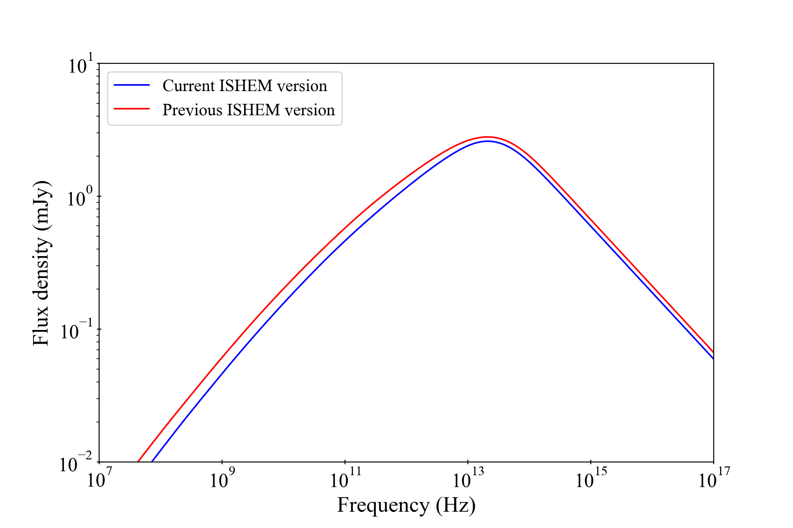
A.2 الانبعاث من أسطوانة متجانسة متحركة
في ishem يتم تقسيم النفاث إلى عدد كبير من الأسطوانات المتجانسة التي تقع محاورها على طول المحور النفاث. تنتقل هذه الأصداف الأسطوانية على طول النفث بينما تتوسع بشكل قطري وفقًا لهندسة النفاث الثابت. يتم حساب الانبعاث المعتمد على الوقت من كل من هذه الأسطوانات بواسطة ishem. من أجل التنبؤ بمتوسط الوقت SED للنفاثة، من الضروري حساب الانبعاث المتكامل زمنياً لملايين هذه الأسطوانات. ولأسباب تتعلق بالكفاءة الحسابية، لا بد من تبسيط عملية نقل الإشعاع.
في النسخة الأصلية من الكود، كان التدفق اللحظي الذي يستقبله المراقب ببساطة:
| (14) |
حيث هو عامل دوبلر النسبي القياسي للأسطوانة، و هو ارتفاع الأسطوانة، و مسافة المصدر، و نصف قطر الأسطوانة (في هذا القسم تمثل الرموز المائلة الكميات المقاسة في الإطار المتبقي للأسطوانة). التقدير المقدم بالمعادلة 14 لا يأخذ في الاعتبار التغيرات في مساحة السطح المتوقعة للأسطوانة عند ملاحظتها بزاوية مختلفة ولا يأخذ في الاعتبار تأثيرات الانحراف النسبي. كما تم حساب انبعاث كل قذيفة بشكل مستقل، وتم إهمال التأثيرات المحتملة لامتصاصها من قبل القذائف الأخرى على طول خط الرؤية. نقترح أدناه معالجة محسنة للتأثيرات الهندسية التي تم تنفيذها في الإصدار الجديد من الكود.
A.2.1 في إطار السكون
لننظر الآن إلى انبعاث الأسطوانة في إطار سكونها، ونهمل امتصاص الإشعاع بواسطة الأجزاء الأخرى من النفاث. القدرة الكثافة الطيفية لكل وحدة زاوية صلبة تنبعث في اتجاه مما يجعل زاوية بالنسبة لسرعة الأسطوانة
| (15) |
حيث يكون التكامل على مساحة من إسقاط الأسطوانة على ، وهو مستوى عمودي على :
| (16) |
حيث . تعمل هذه الصيغة أيضًا إذا تم رؤية الأسطوانة من الأسفل (أي مع ).
يقيس العمق المادي المحلي للأسطوانة عبر الاتجاه ، هي دالة معقدة للموضع على مستوى التكامل P و. ومن أجل تبسيط الحساب، نستبدل الدالة المعقدة بمتوسط عمق الأسطوانة عبر الاتجاه :
| (17) |
مع هذه التقريبات، يتم إعطاء نمط الانبعاث للمصدر بواسطة:
| (18) |
ونلاحظ أن هذا التعبير يصبح دقيقًا في كل من الحدود الرفيعة والسميكة بصريًا.
A.2.2 في إطار الراصد
في إطار المراقب:
| (19) |
والعلاقة بين و تعطى بواسطة:
| (20) |
,
| (21) |
وبالطبع:
| (22) |
(راجع Rybicki and Lightman (1986))
التدفق المرصود على مسافة كبيرة في الاتجاه هو:
| (23) |
مع
| (24) |
و
| (25) |
باستخدام تحويلات المعايير (انظر، مثلًا، Ghisellini 2000):
| (26) |
يمكننا استعادة التعبير عن التدفق المستلم من حيث الكميات المقاسة في إطار المراقب:
| (27) |
A.2.3 آثار الامتصاص بفعل القذائف الأخرى
ويتم امتصاص الإشعاع المتسرب من أعلى القشرة بواسطة القذائف الأخرى الموجودة في النفاث الموجود بين سطح القشرة والراصد، بينما من ناحية أخرى يتم ملاحظة القسم الجانبي للأسطوانة بشكل مباشر ولا يتأثر. لأخذ ذلك في الاعتبار، نستخدم عمق امتصاص السنكروترون الفعال على طول خط الرؤية لتقليل الانبعاث المتسرب عبر الجزء العلوي (أو السطح السفلي للغلاف) بواسطة العامل الإلكتروني . وهذا يعادل استبدال في المعادلة 27 بمساحة سطحية متوقعة فعالة:
| (29) |
لتبسيط الحسابات نعتبر الامتصاص بواسطة أجزاء أخرى من النفث في زمن متوسط فقط. نحن نستخدم المحاكاة لتقدير معامل الامتصاص المتوسط للوقت في النفاثة، حيث هي المسافة من قاعدة النفاثة. من هذا يمكننا جدولة دالة :
| (30) |
لتبسيط العملية الحسابية، نأخذ في الاعتبار خط البصر المتوسط الذي يمر عبر مركز الأسطوانة والذي يقع في موضع لحظي . ثم نقوم بحساب الموضع الذي يهرب عنده شعاع الضوء المسافر على طول خط الرؤية هذا من التدفق نحو الراصد. نقوم بعد ذلك بتقدير على النحو التالي:
| (31) |
ل و
| (32) |
ل .
Appendix B قوانين التحجيم للنفاثات المكافئية
في هذا القسم، نشتق قوانين القياس لتردد وتدفق الكسر الطيفي السنكروتروني الذي استخدمناه لتقدير أفضل المعلمات الملائمة ISHEM الموضحة في الشكلين 10 و 11.
B.1 انبعاث السنكروترون للنفاثات المكافئية ذات التشابه الذاتي
أولاً، يتعين علينا تقدير SED للنفاثات المكافئة القياسية المتشابهة ذاتيًا، أي النفاثات التي يزيد نصف قطرها مع الارتفاع مثل ، حيث و هما الارتفاع ونصف القطر عند قاعدة منطقة انبعاث النفاث.
في هذا القسم، لا نفترض أي شيء عن آلية تبديد النفث، أي أنه ليس من الضروري أن تهيمن عليها الصدمات الداخلية بالضرورة. ومع ذلك، فإننا نفترض أنه، كما هو الحال في نموذج الصدمة الداخلية، يتكون النفاثة من أغلفة أسطوانية متجانسة بمقياس رأسي مناسب ونصف قطر يتبع الاعتماد المكافئ مع المحدد أعلاه. تنبعث كل من هذه القذائف من تدفق ملحوظ لحظي . إجمالي التدفق النفاث هو متوسط التدفق الزمني للقذيفة أثناء عبورها النفاث بأكمله مضروبًا في إجمالي عدد القذائف الموجودة في أي وقت في النفاث:
| (33) |
حيث هو وقت عبور القذيفة النفاثة كما تم قياسه بواسطة المراقب (بافتراض أن منطقة انبعاث النفاث تبدأ عند وتنتهي عند ). يتم تحديد عدد القذائف من خلال حجم النفاث مقسومًا على الطول الملحوظ للأصداف ويتم تصحيحه بواسطة عامل ملء الحجم : . يمكن إعادة كتابة إجمالي التدفق النفاث على النحو التالي:
| (34) |
حيث يتم إعطاء F بالمعادلة 23.
لنفترض أن المجال المغناطيسي في الأصداف الباعثة يتناقص مع نصف قطر النفاث مثل :
| (35) |
نفترض أنه طوال النفاثة، فإن توزيع طاقة الإلكترون داخل الأغلفة هو قانون قوة للمؤشر كما هو موضح بالمعادلة 8، ضمن نطاق عوامل لورنتز الإلكترونية – مع . نفترض وجود نسبة ثابتة بين كثافات الطاقة الحركية والمغناطيسية للجسيم بحيث:
| (36) |
أين
| (37) |
ل :
| (38) |
خلاف ذلك:
| (39) |
بالنسبة إلى p=2:
| (40) |
خلاف ذلك:
| (41) |
في ظل هذه الافتراضات، يتم تقريب معامل امتصاص السنكروترون جيدًا بواسطة المعادلة 12. ويمكن إعادة كتابتها على النحو التالي:
| (42) |
مع
| (43) |
و . يتم إعطاء الثابت بواسطة:
| (44) |
فيما يلي، نفترض أن و .
B.2 تقريب الأسطوانة المحلية
إذا اخترنا ، تصبح المساحة المسقطة وطول عبور الفوتونات (المعادلتان 29 و25):
| (48) |
| (49) |
وهذا يتوافق مع تقريب الاسطوانة المحلية للنفاثة. في هذا التقريب يتم إهمال الاختلافات في وظيفة المصدر ومعاملات الامتصاص على طول خط البصر.
من المتوقع أن يكون هذا التقريب دقيقًا عند زوايا ميل كبيرة () حيث يهيمن الإشعاع المسافر في الاتجاه الشعاعي على الانبعاث المرصود ولا يواجه تدرجات كبيرة في النفاثة. في الواقع، تبين أنها دقيقة بشكل ملحوظ حتى عند زوايا مشاهدة أصغر وزوايا رؤية مماثلة لزاوية فتح النفاث (أي حتى . بالنسبة لميول النفاث الأصغر، يجب اعتماد نهج مختلف (انظر، مثلًا Zdziarski et al. 2016))
في إطار تقريب الأسطوانة المحلية، يمكن إعادة كتابة التدفق النفاث على النحو التالي:
| (50) |
أين:
| (51) |
| (52) |
| (53) |
| (54) |
تنبعث النفاثة في النظام الرقيق بصريًا بترددات و. في هذه الحالة مع،
| (55) |
يمكن التعبير عن التدفق الرقيق بصريًا على النحو التالي:
| (56) |
من ناحية أخرى، فإن البث الممتص جزئيًا يتوافق مع الترددات التي عندها و. ثم بالنسبة لـ ، ، ويمكن التعبير عن التدفق الممتص جزئيًا على النحو التالي:
| (57) |
يتم تعريف تردد القطع على أنه الانتقال بين هذين النظامين. يحدث عند التردد حيث :
| (58) |
يتم بعد ذلك إعطاء التدفق عند تردد الكسر بواسطة:
| (59) |
B.3 قوانين التحجيم في نموذج الصدمات الداخلية
تعتمد معلمات قاعدة منطقة انبعاث النفاثات و و على نموذج التبديد في النفاث. في حالة الصدمات الداخلية (Malzac 2013, 2014):
| (60) |
| (61) |
و
| (62) |
حيث هو نصف قطر النفاثة عند نقطة الطرد (أي بالقرب من الجسم المضغوط). تقع هذه النقطة على ارتفاع . نحن نحدد زاوية فتح النفاث بحيث ، أي كما هو الحال في الهندسة المخروطية على الرغم من أنه في الهندسة المكافئة مع ، الفعلي عند . لاحظ أن علاقات القياس المعطاة بواسطة المعادلات 60 و61 و62 يتم الحصول عليها في حدود . قد لا تعمل بشكل جيد جدًا عند زوايا فتح الكبيرة، أي زوايا فتح نفاثة صغيرة جدًا.
| (63) |
| (64) |
من المتوقع أن تشكل قوانين القياس هذه تقريبًا جيدًا للميل حيث هي زاوية فتح النفاث عند قاعدة منطقة انبعاث النفاثات . نظرًا لأنه في حالة 4U 0614+091 فإن الصدمات الداخلية الأولى تحدث حول ، وفي جميع نماذجنا قمنا بتعيين 10 ومن المتوقع أن يكون التقريب صالحًا للميول مثل ، حيث هو زاوية فتح النفاثة عند . نظرًا لأنها مستقلة عن ملف تعريف المجال المغناطيسي ، فإن علاقات القياس صالحة لمجموعة واسعة من ملفات تعريف التبديد على طول النفاثة. إنها توسع الصيغ المستخدمة في Péault et al. (2019) لتشمل الأشكال الهندسية غير المخروطية. تم أيضًا تحسين الاعتماد على الزاوية لعلاقات القياس فيما يتعلق بصيغ Péault et al. (2019)) من أجل عكس المعالجة المكررة لتباين الإشعاع النفاث المطبق في الإصدار الجديد من ishem. ومع ذلك، لاحظ أنها لا تأخذ في الاعتبار المساهمة المحتملة للنفاثة المضادة.